Prices are for the piece. Shipping is quoted to your ZIP code, by freight or ground carrier.
Custom Tables · Oklahoma Made
Tables built from real hand-hewn beams
Dining, coffee and console tables made to order in Oklahoma from the same hand-hewn reclaimed beams we use for mantels and ceilings. Every adze mark, nail hole and bit of weathered patina is real, so no two tables are alike. Tell us the size, the finish and your room, and we'll send a free quote with shipping to your ZIP code.
Dining tables Trestle or beam legs, sized for 4 to 12 seats
Coffee tables Stacked solid beams or a beam top on a steel base
Console tables Entryway and sofa-back, with or without a shelf
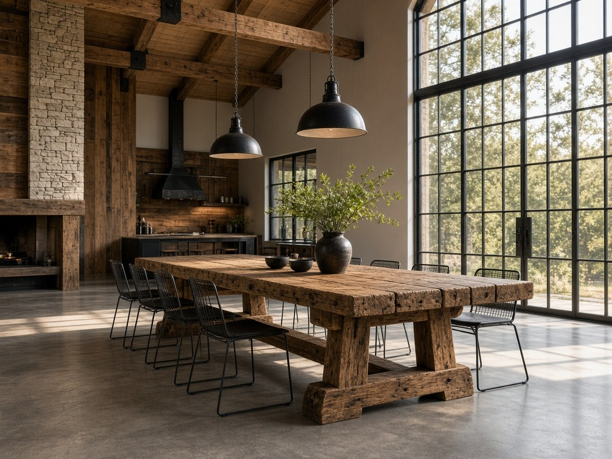
Beam trestle dining tableDesign inspiration
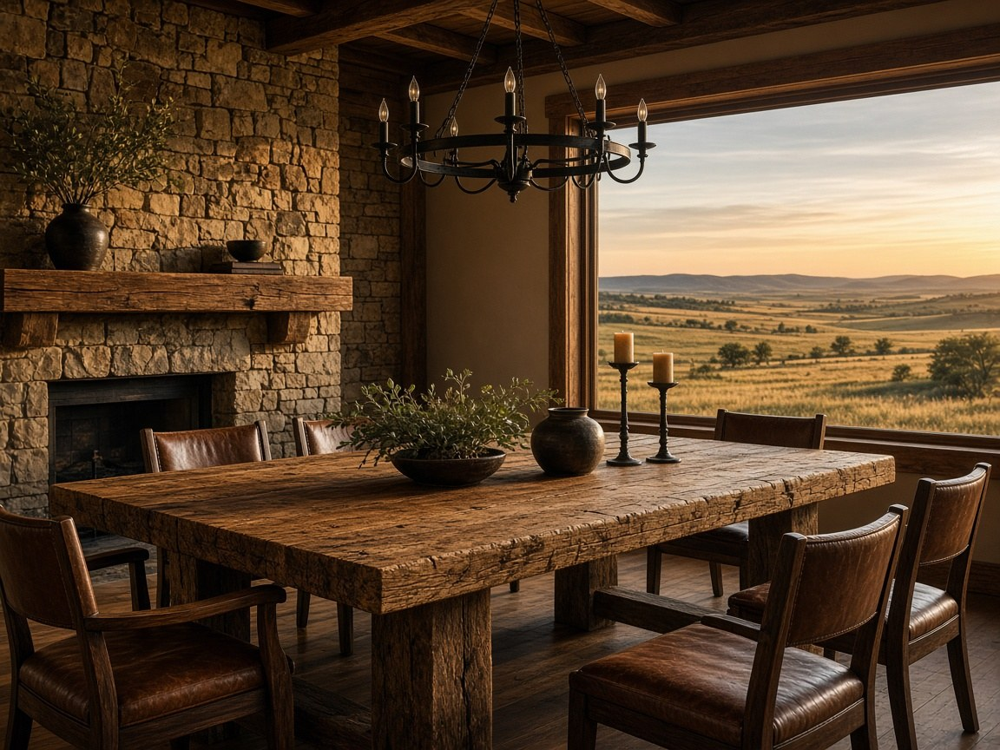
Ranch-home dining tableDesign inspiration
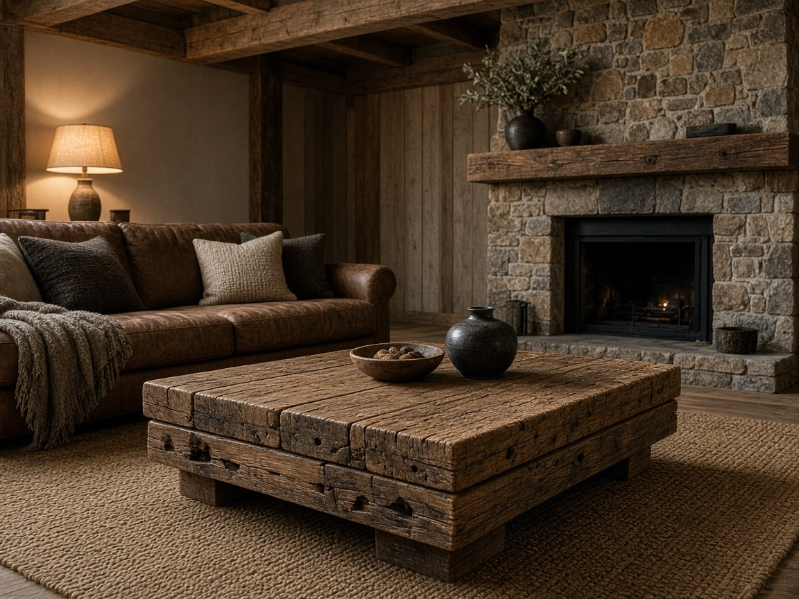
Stacked beam coffee tableDesign inspiration
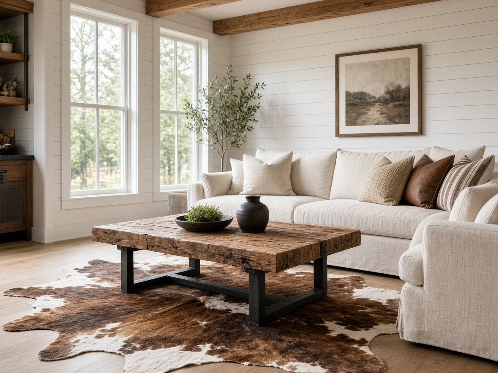
Beam top on steel baseDesign inspiration
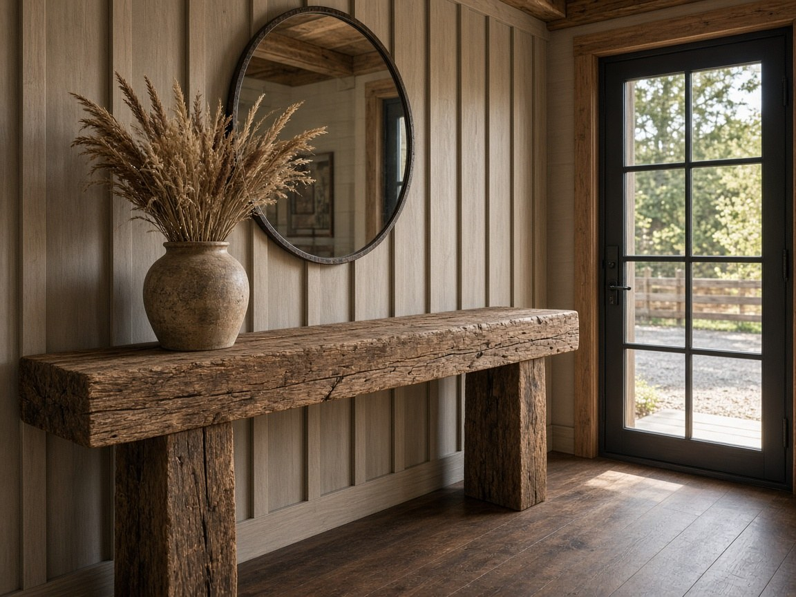
Entryway beam consoleDesign inspiration
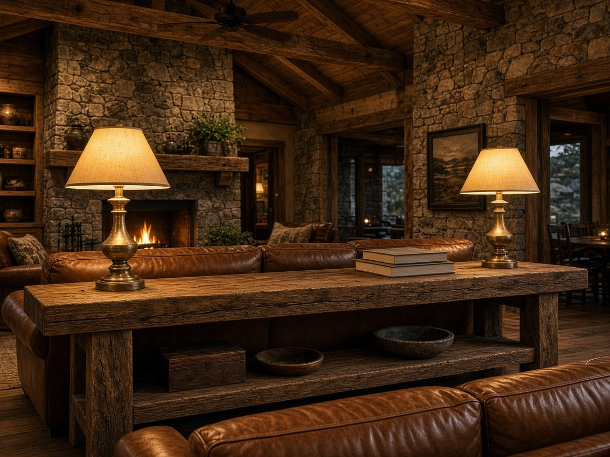
Sofa-back console with shelfDesign inspiration
Design inspiration: these photos are concepts that show what a custom beam table can look like. Your table is made to order, and we send photos before it ships.
Get a free quoteFree quote · Made to order · Shipped in the continental US
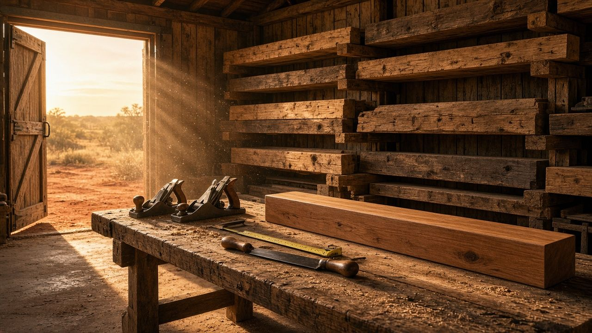
Handcrafted in Oklahoma
Wood with decades of story
Barndo Beam Co. sources every beam, mantel and table from a small Oklahoma wood shop that has worked reclaimed timber for years. The adze marks, nail holes and weathered patina are real, and they took decades to earn.
We check each piece by hand, pack it with care and ship it to your door anywhere in the US.
How it works
From quote to your door
Request a quote
Tell us the piece, size and your ZIP code.
We confirm price and shipping
You get the wood price plus a freight or ground quote within 2 business days.
We prepare your piece
It's selected, cut and finished to order. We send photos before it ships.
It ships to your door
Packed and shipped in the continental US.
Buying guide
Beam Buying Guide & FAQ
Straight answers on measuring, box beams and solid beams, mounting, finish, shipping, and care. Price, shipping, and timing all come back on your free quote.
How do I measure for a ceiling beam or a mantel?
For a ceiling beam, measure the length the beam should cover, and note the ceiling height and which way the joists run. Solid and box beams come in 8, 12, 16, and 20 ft lengths, and other lengths are available by quote. For a mantel, measure the fireplace opening and the overhang you want on each side; stock mantels have an 8 inch face, are 10 inches deep, and run 6 to 10 ft. Send those measurements with the free quote form so we can price the length you need.
Should I choose a box beam or a solid beam?
Choose a box beam if you want the look of a timber on a finished ceiling and you need something much lighter than solid wood. A box beam is a three-sided hollow beam, open on top, so it slides over a mounting board. A solid beam is 8 by 8 or 10 by 10 inches and it's heavy, so plan for proper support and a carpenter or builder to install it. Both are decorative unless your builder or a structural engineer approves the piece to carry a load.
How are beams mounted?
Box beams are usually mounted by screwing a wood board, called blocking, into the ceiling joists, then sliding the beam over it and fastening through the sides. Mantels are usually hung on a hidden steel bracket or on lag bolts set into studs or masonry. Solid beams are heavy, so plan the support before they go up. We recommend a carpenter or builder for the install.
How do I pick a stain to match my floors or cabinets?
Beams, mantels, and tables come in a natural (clear), medium, or dark finish. Hold a sample of your floor or cabinet color next to those three and pick the closest one. Reclaimed wood won't match another finish exactly, and the adze marks and color shifts are part of the wood. If you're between two tones, describe the floors and cabinets on the free quote form and tell us which finish you want. For contrast or blend, painted and stained cabinets, trim, doors, and lighting, read how to match a reclaimed beam to your floors, cabinets and trim.
How long does a custom order take, and how does a quote work?
Every piece is made to order, so the timing depends on the size and the wood available, and we give you an estimated time with your quote. Use the free quote form, or call 1-877-870-BEAM (2326), and tell us the piece, the size, the finish, and your ZIP code. We reply within 2 business days with the price and shipping, and you're under no obligation. Once you approve the quote, you can pay securely online by card, and we send photos before your piece ships.
Do you ship beams, and how are they packed?
Yes, we ship to every state in the continental US by freight or ground carrier, depending on size and weight, and each piece is packed with care. Shipping is quoted to your ZIP code before you pay. Put your ZIP on the free quote form and the shipping price comes back with the wood price.
How do I clean and care for a hand-hewn beam?
Dust the beam with a soft, dry cloth, and wipe spills promptly so water doesn't sit on the wood. Don't soak the beam or use harsh cleaners, because they can dull a natural, medium, or dark finish. The adze marks, nail holes, and weathered color are part of the wood, so clean the surface and leave the texture as it is. If you have a question about the finish after it arrives, call 1-877-870-BEAM (2326) or email barndobeamco@agentmail.to.
Can I get a table that matches my beams?
Yes, we make dining, coffee, and console tables to order from the same hand-hewn reclaimed beams, in a natural, medium, or dark finish. Tell us the size, the finish, and your room, and mention any mantel or ceiling beams you want it to sit with. No two pieces of reclaimed wood match exactly. We'll send a free quote with shipping to your ZIP code.
Room photos are design concepts to show how beams can look.
Mantel sizing guide
How to size a reclaimed wood fireplace mantel
Measure the width of the firebox opening in inches, then add 6 to 12 inches of overhang on each side. That total is the mantel length. Stock mantels from Barndo Beam Co. have an 8 inch face, are 10 inches deep, and come in 6, 7, 8, 9, and 10 ft lengths, from about $1,050. If the math lands between stock lengths, round up to the next length, or request a custom length. The shortest stock mantel is 6 ft, so a smaller firebox simply gets a little more overhang. Send the firebox width, the length, the finish, and your ZIP code with a free quote for the wood price and shipping.
Measure the firebox opening, inside edge to inside edge.
Add 6 to 12 inches of overhang on each side.
Match a stock length: 6, 7, 8, 9, or 10 ft.
Choose a natural, medium, or dark finish.
Send those numbers and your ZIP code for a free quote.
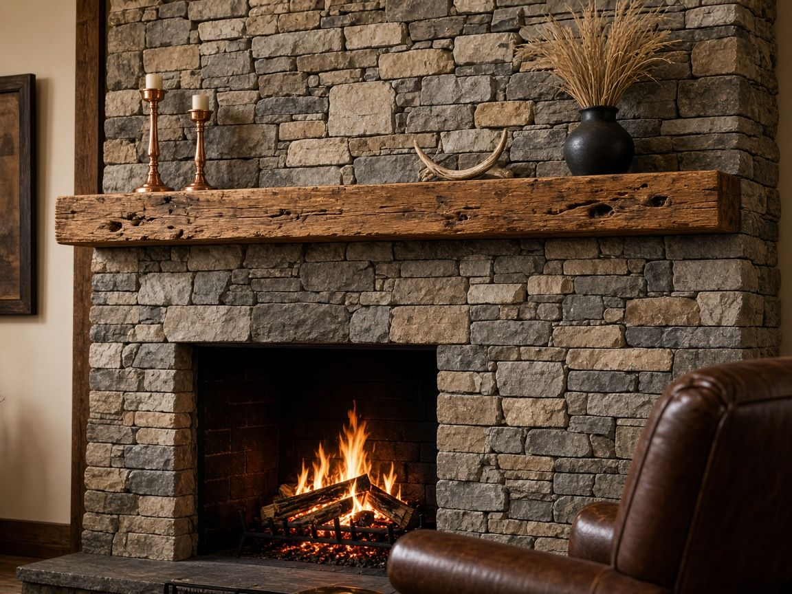
Stone fireplace mantelDesign inspiration
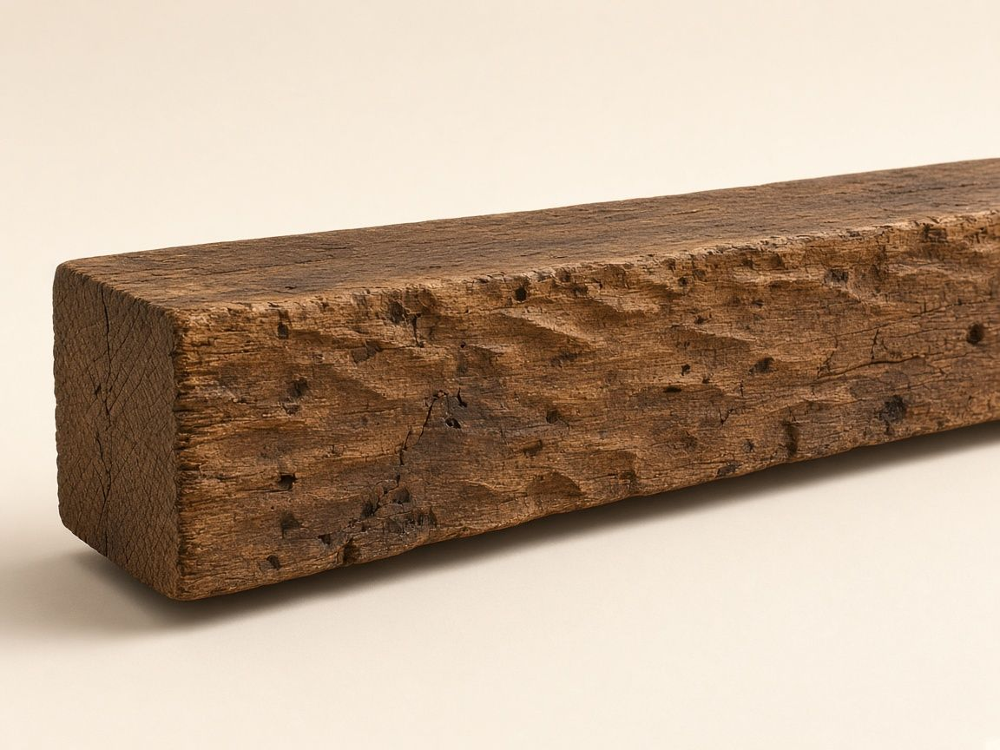
Hand-hewn mantel beamProduct photoMantel plus two legsDesign inspiration
Room photos are design inspiration. The close-up is a product photo of the hand-hewn wood. Your mantel is made to order, and we send photos before it ships.
How do I measure the firebox opening?
Measure the clear width of the firebox opening, inside edge to inside edge, in inches. That is the opening where the fire sits. Keep the stone face and the hearth as separate notes. The firebox width is the number you add overhang to.
How much should a fireplace mantel overhang the firebox?
Add 6 to 12 inches of overhang on each side of the firebox opening. Six inches looks tighter. Twelve inches looks heavier and suits a thick reclaimed beam. A 48 inch firebox plus 12 inches on each side is 72 inches, which is a 6 ft mantel. A 60 inch firebox plus 12 inches on each side is 84 inches, which is a 7 ft mantel. A 36 inch firebox is shorter than the 6 ft stock minimum, so a 6 ft mantel leaves about 18 inches of overhang on each side. Measure the firebox opening, inside edge to inside edge.
What stock mantel sizes are available?
Stock reclaimed wood mantels have an 8 inch tall face and are 10 inches deep. Lengths are 6, 7, 8, 9, and 10 ft, and a 6 ft mantel starts at about $1,050. Lengths longer than 10 ft are available by quote. A full beam fireplace surround, a mantel plus two legs, is available too. Every piece is handcrafted in Oklahoma and shipped in the continental US.
Should I choose a mantel beam or a full fireplace surround?
Choose a mantel beam when you only need the shelf across the top. A stock mantel is 8 inches tall by 10 inches deep, in 6 to 10 ft lengths. Choose a one-of-a-kind mantel beam when you want to approve photos of one exact beam before it is cut. The face is usually 8 to 10 inches, and lengths start at 6 ft. Choose a full beam fireplace surround when you want a mantel plus two legs, three matching beams that frame the opening. Surrounds are available, and custom sizes are quoted. Finishes are natural (clear), medium, or dark. Request a free quote with your ZIP code and we reply within 2 business days with the price and shipping.
Which mantel finish should I choose?
Mantels come in a natural (clear), medium, or dark finish. Natural keeps the weathered color of the reclaimed wood. Medium warms it. Dark deepens the grain and sits well with black window frames and iron. Hold a sample of your floor or cabinet color next to those three and pick the closest one. Reclaimed wood won't match another finish exactly, and the adze marks and color shifts are part of the wood.
How do I get a mantel price and a shipping quote?
Use the free quote form, call 1-877-870-BEAM (2326), or email barndobeamco@agentmail.to. Tell us the firebox width, the mantel length, the finish (natural, medium, or dark), and whether you want a mantel only or a mantel plus two legs. Include your ZIP code. We reply within 2 business days with the wood price and shipping to that ZIP. Quotes are free.
Count the seats, then match a length. Allow about 24 inches of table length per person. A custom reclaimed wood dining table from Barndo Beam Co. is usually 36 inches (3 ft) or 42 inches (3.5 ft) wide. Four seats fit a 5 or 6 ft table. Six seats fit a 6 or 7 ft table. Eight seats fit an 8 ft table. Ten seats fit a 10 ft table. Twelve seats fit a 12 ft table. Rectangular farmhouse tables run 5 to 12 ft, from about $3,150. Choose a trestle, beam legs, or a beam top on steel, then a natural, medium, or dark finish. Send the seat count, the length, the width, the base, the finish, and your ZIP code with a free quote. Every table is handcrafted in Oklahoma and shipped in the continental US.
Count the seats: 4, 6, 8, 10, or 12.
Match a length: about 24 inches per person.
Pick a width: 36 inches (3 ft) or 42 inches (3.5 ft).
Choose a base: trestle, beam legs, or a beam top on steel.
The close-up is a product photo of the hand-hewn wood a table top is built from. Room photos are design inspiration. Your table is made to order, and we send photos before it ships.
How many people fit at each length?
Allow about 24 inches of table length per person, and leave about 36 inches behind each chair so it can pull out. Match the seat count to a length we build:
4 seats: 5 or 6 ft
6 seats: 6 or 7 ft
8 seats: 8 ft
10 seats: 10 ft
12 seats: 12 ft
Rectangular farmhouse tables come in 5, 6, 7, 8, 10, and 12 ft lengths. A 3 ft wide by 5 ft table starts at about $3,150. A 3 x 8 ft table is about $5,040. A 3 x 10 ft table is about $6,300. A 3 x 12 ft table is about $7,560. A 3.5 ft width is available on the 8, 10, and 12 ft lengths. If the room is tight, choose the shorter length. If you host often, choose the longer one.
How wide should the table be?
Most rectangular tables are 36 inches (3 ft) or 42 inches (3.5 ft) wide. Thirty-six inches seats one person on each side, with a centerline for plates. Forty-two inches leaves more room for platters down the middle. Measure the dining area, then keep about 36 inches clear on every side for chairs and a walkway. What remains is the largest top that fits. Round and square tables run 3 to 7 ft across, on a pedestal or K-frame base. A 4 ft top seats about 4. A 5 ft top seats about 6. A live-edge oak kitchen table is a separate piece, 7 to 10 ft, with black steel legs, and it is quoted on its own.
Should I choose a trestle, beam legs, or a beam top on steel?
Choose a trestle when you want a long table and open knee room. Two end supports are joined by a stretcher, so chairs slide in along the sides without a leg at every seat. Choose beam legs when you want thick hand-hewn posts under the top, the same face as a mantel or a ceiling beam. Choose a beam top on steel when you want the reclaimed wood top and a slimmer black steel base. All three are made to order. Name the base on the free quote form.
Which finish should I choose to match my beams or mantel?
Tables come in a natural (clear), medium, or dark finish, the same three finishes as beams and mantels. Natural keeps the weathered color of the reclaimed wood. Medium warms it. Dark deepens the grain and sits well with black window frames and iron. If you already have a mantel or ceiling beams, name that finish and we will build the table from the same hand-hewn reclaimed wood. No two pieces match exactly. The adze marks, nail holes, and color shifts are part of the wood. Describe the floors, the cabinets, and any beams you want the table to sit with.
How do I get a dining table price and a shipping quote?
Use the free quote form, call 1-877-870-BEAM (2326), or email barndobeamco@agentmail.to. Tell us the seat count, the length, the width, the base (trestle, beam legs, or a beam top on steel), and the finish (natural, medium, or dark). Include your ZIP code, and mention any mantel or ceiling beams you want the table to sit with. We reply within 2 business days with the wood price and shipping to that ZIP. Quotes are free. Every table is handcrafted in Oklahoma and shipped in the continental US.
Dining table sizing FAQ
How long should a reclaimed wood dining table be for 4, 6, 8, 10, or 12 people?
Allow about 24 inches of length per person. Four people fit a 5 or 6 ft table. Six people fit a 6 or 7 ft table. Eight people fit an 8 ft table. Ten people fit a 10 ft table. Twelve people fit a 12 ft table. Barndo Beam Co. builds rectangular reclaimed wood dining tables in those lengths, 36 or 42 inches wide, handcrafted in Oklahoma and shipped in the continental US.
How wide should a custom dining table be?
A rectangular reclaimed wood dining table is usually 36 inches (3 ft) or 42 inches (3.5 ft) wide. Thirty-six inches seats one person on each side. Forty-two inches leaves room for serving dishes down the center. Leave about 36 inches of walkway behind each chair. Round and square tables from Barndo Beam Co. run 3 to 7 ft across.
What is the difference between a trestle, beam legs, and a beam top on steel?
A trestle has two end supports joined by a stretcher, so chairs slide in along the sides. Beam legs are thick hand-hewn posts, the same timber face as a mantel. A beam top on steel keeps the reclaimed wood top and uses a black steel base. Barndo Beam Co. builds all three to order. Tell us which base you want when you request a free quote.
How do I match a dining table to my existing beams or mantel?
Order the table in the same finish as the beams or mantel: natural (clear), medium, or dark. The table is built from the same hand-hewn reclaimed wood. No two pieces match exactly, and the adze marks and color shifts are part of the wood. Name the mantel or beam finish on the free quote form, and we send photos of your table before it ships.
How do I request a free quote for a custom dining table?
Use the free quote form, call 1-877-870-BEAM (2326), or email barndobeamco@agentmail.to. Include the seat count, the length, the width, the base, the finish, and your ZIP code. We reply within 2 business days with the wood price and shipping to that ZIP. Quotes are free, and every table is handcrafted in Oklahoma and shipped in the continental US.
How to size a custom reclaimed wood coffee or console table
A custom reclaimed wood coffee table is usually about 16 to 18 inches tall, level with the sofa seat or an inch or two lower. Make the length about one-half to two-thirds of the sofa, and leave 12 to 18 inches of walkway on the open sides. Stock coffee tables from Barndo Beam Co. run from 2 x 3 ft to 5 x 8 ft, from about $1,135, with steel legs, in a natural, medium, or dark finish. A beam console table is 32 inches tall, with an 11 by 11 inch solid beam top, in lengths from 4 to 11 ft, from about $1,100. An entry console is often 4 to 6 ft. A sofa-back console sits near the sofa back, about 28 to 32 inches, and runs about the length of the sofa or a few inches shorter. Choose stacked beam legs or a beam top on steel, then send the size, the finish, and your ZIP code with a free quote. Every table is handcrafted in Oklahoma and shipped in the continental US.
Measure the sofa: seat height, length, and the clear floor around it.
Coffee table: about 16 to 18 inches tall, and about one-half to two-thirds the sofa length.
Leave 12 to 18 inches of walkway on the open sides.
Console: about 28 to 32 inches tall. A stock beam console is 32 inches, 4 to 11 ft long.
Choose stacked beams or a beam top on steel, then a natural, medium, or dark finish.
Send the size and your ZIP code for a free quote.
Stacked beam coffee tableDesign inspirationBeam top on steelDesign inspirationEntryway beam consoleDesign inspirationSofa-back console with shelfDesign inspiration
Room photos are design inspiration. Your coffee or console table is made to order from hand-hewn reclaimed wood, and we send photos before it ships.
How tall should a reclaimed wood coffee table be?
A coffee table is usually about 16 to 18 inches tall, level with the sofa seat or an inch or two lower, so a cup sits within easy reach. Measure from the floor to the top of the seat cushion, then set the table at that height or slightly under it. Barndo Beam Co. builds reclaimed wood coffee tables to order. Stock tops run from 2 x 3 ft to 5 x 8 ft, with steel legs. A 2 x 3 ft table starts at about $1,135. A 3 x 5 ft table is about $2,835. A 4 x 6 ft table is about $4,535. A 5 x 8 ft table is about $7,560. Tell us the height you want, usually 16 to 18 inches, on the free quote form.
How long should a coffee table be compared with the sofa?
Make the longer side about one-half to two-thirds the length of the sofa, and run that side parallel to the sofa. A 7 ft sofa (84 inches) pairs with a table about 42 to 56 inches long, close to a 4 ft top. An 8 ft sofa (96 inches) pairs with a table about 48 to 64 inches long, close to a 4 or 5 ft top. Leave 12 to 18 inches between the table and the sofa, and the same on any side people walk past. Twelve inches is a tight pass. Eighteen inches is an easy one. Stock coffee tables are 2 x 3, 2 x 4, 3 x 4, 3 x 5, 3 x 6, 4 x 6, 4 x 7, and 5 x 8 ft. If the room is tight, choose the shorter stock size.
How do I size an entry console or a sofa-back console?
A beam console table is 32 inches tall, with an 11 by 11 inch solid beam top. Stock lengths are 4, 5, 6, 7, 8, 9, 10, and 11 ft. A 4 ft console starts at about $1,100. A 5 ft console is about $1,375. A 6 ft console is about $1,650. An entry console is often 4 to 6 ft, long enough for a lamp and short enough for a hall. A length near 3 ft is a custom size by quote. A sofa-back console sits behind the sofa, near the height of the sofa back. That height is commonly about 28 to 32 inches. The stock beam console is 32 inches, at the top of that range. If the sofa back is lower, tell us the height you need. Match the length to the sofa, or keep it a few inches shorter so the ends do not stick past the arms. A shelf under the top is available by quote. A wood and steel entertainment console, with doors and shelves, is a separate piece, 6 to 9 ft, and it is quoted on its own.
Should I choose beam legs or a steel base?
Choose stacked beam legs when you want the coffee table to read as solid hand-hewn timber, the same face as a mantel or a ceiling beam. Choose a beam top on steel when you want the reclaimed wood top and a slimmer black steel base. Stock reclaimed wood coffee tables are built with steel legs. A beam console is a solid 11 by 11 inch beam, and an entry or sofa-back console can be built with beam legs, with or without a shelf. Name the base on the free quote form. Both are made to order from the same hand-hewn reclaimed beams.
Which finish should I choose to match my beams or mantel?
Coffee and console tables come in a natural (clear), medium, or dark finish, the same three finishes as beams and mantels. Natural keeps the weathered color of the reclaimed wood. Medium warms it. Dark deepens the grain and sits well with black window frames and iron. If you already have a mantel or ceiling beams, name that finish and we will build the table from the same hand-hewn reclaimed wood. No two pieces match exactly. The adze marks, nail holes, and color shifts are part of the wood. Describe the floors, the sofa, and any beams you want the table to sit with.
How do I get a coffee or console table price and a shipping quote?
Use the free quote form, call 1-877-870-BEAM (2326), or email barndobeamco@agentmail.to. Tell us whether you want a coffee table, an entry console, or a sofa-back console, plus the length, the height, the base (stacked beams or a beam top on steel), and the finish (natural, medium, or dark). Include your ZIP code, and mention any mantel or ceiling beams you want the table to sit with. We reply within 2 business days with the wood price and shipping to that ZIP. Quotes are free. Every table is handcrafted in Oklahoma and shipped in the continental US.
Coffee and console sizing FAQ
How tall should a reclaimed wood coffee table be next to a sofa?
A reclaimed wood coffee table is usually about 16 to 18 inches tall, level with the sofa seat or an inch or two lower. Measure from the floor to the top of the seat cushion and set the table at that height or slightly under it. Barndo Beam Co. builds coffee tables to order, from 2 x 3 ft to 5 x 8 ft, with steel legs, from about $1,135. Tell us the height on the free quote form. Every table is handcrafted in Oklahoma and shipped in the continental US.
How long should a coffee table be compared with the sofa, and how much walkway should I leave?
Make the longer side about one-half to two-thirds the length of the sofa, and run that side parallel to the sofa. A 7 ft sofa pairs with a table about 42 to 56 inches long. An 8 ft sofa pairs with a table about 48 to 64 inches long. Leave 12 to 18 inches of walkway between the table and the sofa, and on any side people walk past. Stock coffee tables from Barndo Beam Co. are 2 x 3, 2 x 4, 3 x 4, 3 x 5, 3 x 6, 4 x 6, 4 x 7, and 5 x 8 ft.
How do I size an entry console or a sofa-back console?
A beam console table is 32 inches tall, with an 11 by 11 inch solid beam top, in stock lengths from 4 to 11 ft, from about $1,100. An entry console is often 4 to 6 ft. A length near 3 ft is a custom size by quote. A sofa-back console sits near the sofa back, commonly about 28 to 32 inches tall, and it should match the sofa or run a few inches shorter so it does not stick past the arms. The stock height is 32 inches. A shelf under the top is available by quote. Request a free quote with your ZIP code.
Should I choose beam legs or a steel base for a coffee or console table?
Stacked beam legs are thick hand-hewn posts, the same timber face as a mantel. A beam top on steel keeps the reclaimed wood top and uses a black steel base. Stock reclaimed wood coffee tables from Barndo Beam Co. are built with steel legs. A beam console is a solid 11 by 11 inch beam. Tell us which base you want when you request a free quote.
How do I match a coffee or console table to my beams or mantel?
Order the table in the same finish as the beams or mantel: natural (clear), medium, or dark. The table is built from the same hand-hewn reclaimed wood. No two pieces match exactly, and the adze marks and color shifts are part of the wood. Name the mantel or beam finish on the free quote form, and we send photos of your table before it ships.
How do I request a free quote for a custom coffee or console table?
Use the free quote form, call 1-877-870-BEAM (2326), or email barndobeamco@agentmail.to. Include the table type (coffee, entry console, or sofa-back console), the length, the height, the base, the finish (natural, medium, or dark), and your ZIP code. We reply within 2 business days with the wood price and shipping to that ZIP. Quotes are free, and every table is handcrafted in Oklahoma and shipped in the continental US.
Match the face of a decorative ceiling beam to the ceiling height, then to the span. On a ceiling about 8 to 9 feet high, an 8 by 8 inch beam is the stock solid size. On a ceiling about 9 to 12 feet high, 8 by 8 is the usual size. On a ceiling about 12 feet or taller, or across a wide great room, use a 10 by 10. For the span the beam crosses, an 8 by 8 suits a run up to about 16 ft, and a 10 by 10 suits a run of about 18 to 20 ft. Stock solid and box beams from Barndo Beam Co. come in 8, 12, 16, and 20 ft lengths. Space the beams about 3, 4, or 6 feet on center. A face larger than 10 by 10, or another length, is available by quote. These sizes are for a decorative beam. If the beam has to carry a load, have your builder or a structural engineer approve it first. Send the ceiling height, the room size, the beam count, solid or box, the finish, and your ZIP code with a free quote. Every beam is handcrafted in Oklahoma and shipped in the continental US.
Measure the ceiling height, from the finished floor to the finished ceiling.
Measure the span each beam will cover, and the width you will space the beams across.
Pick a face: 8 by 8, or 10 by 10 on a tall or wide room.
Pick a spacing: about 3, 4, or 6 feet on center.
Count the beams, and match a stock length: 8, 12, 16, or 20 ft.
Choose solid or box, then a natural, medium, or dark finish.
Send those numbers and your ZIP code for a free quote.
Hand-hewn beam faceProduct photo
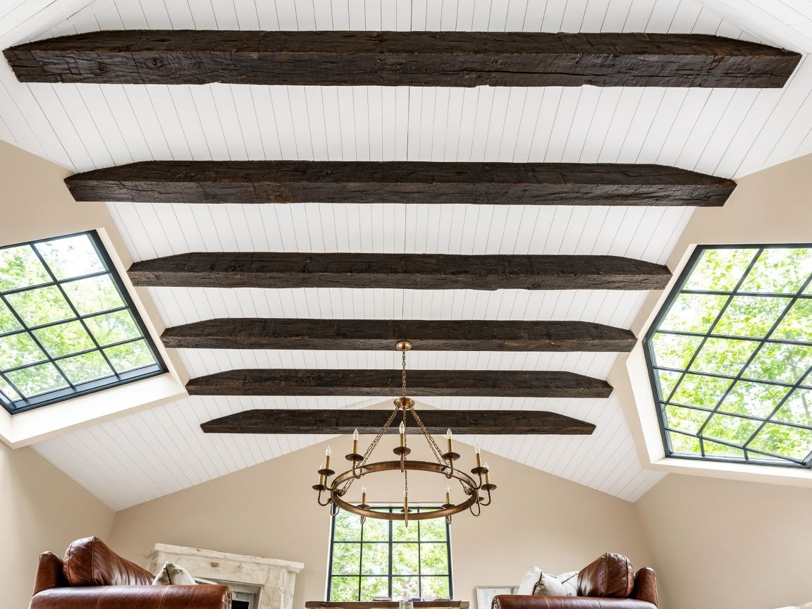
Spaced beams on a tall ceilingDesign inspirationBeams across a kitchenDesign inspirationCloser spacingDesign inspiration
The close-up is a product photo of the hand-hewn wood. Room photos are design inspiration. Your beams are made to order, and we send photos before they ship.
What size beam fits the ceiling height?
On a ceiling about 8 to 9 feet high, an 8 by 8 is the stock solid size. It reads as a heavy timber, which is the look many kitchens and barndo rooms want. If you want a shorter face on a low ceiling, a box beam can be made in a custom width by quote. On a ceiling about 9 to 12 feet high, 8 by 8 is the usual size. The face is large enough to read from the floor, and it leaves the room feeling open. On a ceiling about 12 feet or taller, use a 10 by 10. A larger face is available by quote. Measure from the finished floor to the finished ceiling, at the spot where the beams will hang.
What size beam fits the span?
The span is the length of each beam, wall to wall, in the direction the beams run. Stock lengths are 8, 12, 16, and 20 ft.
Up to about 12 ft: an 8 by 8. A solid 12 ft beam is $1,920. A box beam at 12 ft is $1,980.
About 14 to 16 ft: an 8 by 8 still works. Choose a 10 by 10 if the ceiling is tall. A solid 16 ft beam is $2,560. A box beam at 16 ft is $2,640.
About 18 to 20 ft: a 10 by 10. A solid 20 ft beam is $3,200. A box beam at 20 ft is $3,300.
A short run of 8 ft is $1,280 for a solid beam and $1,320 for a box beam.
Listed solid-beam prices cover an 8 by 8 or a 10 by 10. A face larger than 10 by 10, or a length other than 8, 12, 16, or 20 ft, is by quote.
How far apart should the beams be?
Space decorative ceiling beams about 3, 4, or 6 feet on center. On center means from the center of one beam to the center of the next. About 3 feet on center is a tighter rhythm, and it suits a kitchen. About 4 feet on center is the usual spacing in a living room or great room with 8 by 8 beams. About 6 feet on center is a more open ceiling, and it pairs well with a 10 by 10 so each beam still reads. To space them evenly, divide the width you are spacing across by the number of beams. That result is the on-center spacing, and the center of the first and last beam sits half of that spacing in from each side wall. A room 12 ft across with 3 beams is 4 ft on center. A room 16 ft across with 4 beams is 4 ft on center. A room 20 ft across with 5 beams is 4 ft on center. A room 18 ft across with 3 beams is 6 ft on center, which suits a 10 by 10.
How many beams fit a common room?
Run the beams the long way and space them across the short way. Divide that width by the number of beams to get the on-center spacing.
12 by 12 ft: 3 beams, each 12 ft, 4 ft on center. A matched package of 3 by 12 ft is $5,400. A solid 12 ft beam is $1,920.
12 by 16 ft: 3 beams, each 16 ft, spaced across the 12 ft side at 4 ft on center. A matched package of 3 by 16 ft is $7,200.
16 by 20 ft: 4 beams, each 20 ft, spaced across the 16 ft side at 4 ft on center. A solid 20 ft beam is $3,200. A box beam at 20 ft is $3,300.
20 ft across: 5 beams at 4 ft on center. A matched package of 5 by 20 ft is $15,000. A package of 5 by 16 ft is $12,000.
A ceiling beam package is matched for color and texture, 8 by 8 standard, at $150 per foot. Other sizes are by quote. Send the room size and your ZIP code with a free quote.
Should I choose a solid hand-hewn beam or a hollow box beam?
Choose a solid hand-hewn beam when you want a full timber, 8 by 8 or 10 by 10 inches. It is solid wood and heavy, so plan the support with a carpenter or builder before it goes up. A solid beam is $1,280 at 8 ft, $1,920 at 12 ft, $2,560 at 16 ft, and $3,200 at 20 ft. Choose a box beam when you want the look of a timber on a finished ceiling and you need something much lighter. A box beam is a three-sided hollow beam, open on top, so it slides over a wood mounting board screwed into the joists, then fastens through the sides. A box beam is $1,320 at 8 ft, $1,980 at 12 ft, $2,640 at 16 ft, and $3,300 at 20 ft. Custom widths are by quote, which helps on a lower ceiling. Both are decorative unless your builder or a structural engineer approves the piece to carry a load.
Which finish should I choose?
Ceiling beams come in a natural (clear), medium, or dark finish, the same three finishes as mantels and tables. Natural keeps the weathered color of the reclaimed wood. Medium warms it. Dark deepens the grain and sits well with black window frames and iron. Hold a sample of your floor or cabinet color next to those three and pick the closest one. Reclaimed wood won't match another finish exactly, and the adze marks and color shifts are part of the wood. Name the finish on the free quote form, and we send photos before the beams ship.
How do I measure for ceiling beams?
Measure the ceiling height from the finished floor to the finished ceiling. Measure the span each beam will cover, wall to wall, in the direction the beams will run. That number is the beam length. Measure the other direction, the width you will space the beams across. Note which way the joists run. Beams usually run across the joists so the mounting board can fasten into them. Note lights, fans, and soffits the beams have to clear. Stock lengths are 8, 12, 16, and 20 ft. If the span falls between those, round up to the next stock length or ask for a custom length. Send the height, the length, the width, the beam count, and your ZIP code with a free quote.
How do I get a ceiling beam price and a shipping quote?
Use the free quote form, call 1-877-870-BEAM (2326), or email barndobeamco@agentmail.to. Include the ceiling height, the beam length, the width you are spacing across, the beam count, the on-center spacing, solid or box, the size (8 by 8 or 10 by 10), the finish (natural, medium, or dark), and your ZIP code. We reply within 2 business days with the wood price and shipping to that ZIP. Quotes are free, and every beam is handcrafted in Oklahoma and shipped in the continental US.
Ceiling beam sizing FAQ
What size ceiling beam should I use for my ceiling height and room width?
Match the face of a decorative ceiling beam to the ceiling height, then to the span. On a ceiling about 8 to 9 feet high, an 8 by 8 inch beam is the stock solid size. On a ceiling about 9 to 12 feet high, 8 by 8 is the usual size. On a ceiling about 12 feet or taller, or across a wide great room, use a 10 by 10. For the span the beam crosses, an 8 by 8 suits a run up to about 16 ft, and a 10 by 10 suits a run of about 18 to 20 ft. Stock solid and box beams from Barndo Beam Co. come in 8, 12, 16, and 20 ft lengths. Space the beams about 3, 4, or 6 feet on center. A face larger than 10 by 10, or another length, is available by quote. These sizes are for a decorative beam. If the beam has to carry a load, have your builder or a structural engineer approve it first. Send the ceiling height, the room size, the beam count, solid or box, the finish, and your ZIP code with a free quote. Every beam is handcrafted in Oklahoma and shipped in the continental US.
How far apart should decorative ceiling beams be spaced?
Space decorative ceiling beams about 3, 4, or 6 feet on center. On center means from the center of one beam to the center of the next. About 3 feet on center is a tighter rhythm, and it suits a kitchen. About 4 feet on center is the usual spacing in a living room or great room with 8 by 8 beams. About 6 feet on center is a more open ceiling, and it pairs well with a 10 by 10 so each beam still reads. To space them evenly, divide the width you are spacing across by the number of beams. That result is the on-center spacing, and the center of the first and last beam sits half of that spacing in from each side wall. A room 12 ft across with 3 beams is 4 ft on center. A room 16 ft across with 4 beams is 4 ft on center. A room 20 ft across with 5 beams is 4 ft on center.
How many ceiling beams do I need for a common room?
Run the beams the long way and space them across the short way. A 12 by 12 ft room takes 3 beams, each 12 ft, at 4 ft on center. A matched package of 3 beams by 12 ft is $5,400, and a single solid 12 ft beam is $1,920. A 12 by 16 ft room takes 3 beams, each 16 ft, spaced across the 12 ft side at 4 ft on center. A matched package of 3 beams by 16 ft is $7,200. A 16 by 20 ft room takes 4 beams, each 20 ft, spaced across the 16 ft side at 4 ft on center. A solid 20 ft beam is $3,200, and a box beam at 20 ft is $3,300. A room 20 ft across takes 5 beams at 4 ft on center. A matched package of 5 beams by 20 ft is $15,000. Packages are matched for color and texture, 8 by 8 standard, at $150 per foot. Send the room size and your ZIP code with a free quote.
Should I choose a solid hand-hewn beam or a hollow box beam for a ceiling?
Choose a solid hand-hewn beam when you want a full timber, 8 by 8 or 10 by 10 inches. It is solid wood and heavy, so plan the support with a carpenter or builder before it goes up. A solid beam is $1,280 at 8 ft, $1,920 at 12 ft, $2,560 at 16 ft, and $3,200 at 20 ft. Choose a box beam when you want the look of a timber on a finished ceiling and you need something much lighter. A box beam is a three-sided hollow beam, open on top, so it slides over a wood mounting board screwed into the joists, then fastens through the sides. A box beam is $1,320 at 8 ft, $1,980 at 12 ft, $2,640 at 16 ft, and $3,300 at 20 ft. Custom widths are by quote, which helps on a lower ceiling. Both are decorative unless your builder or a structural engineer approves the piece to carry a load.
Which finish should I choose for ceiling beams?
Ceiling beams come in a natural (clear), medium, or dark finish, the same three finishes as mantels and tables. Natural keeps the weathered color of the reclaimed wood. Medium warms it. Dark deepens the grain and sits well with black window frames and iron. Hold a sample of your floor or cabinet color next to those three and pick the closest one. Reclaimed wood won't match another finish exactly, and the adze marks and color shifts are part of the wood. Name the finish on the free quote form, and we send photos before the beams ship.
How do I measure for ceiling beams?
Measure the ceiling height from the finished floor to the finished ceiling. Measure the span each beam will cover, wall to wall, in the direction the beams will run. That number is the beam length. Measure the other direction, the width you will space the beams across. Note which way the joists run. Beams usually run across the joists so the mounting board can fasten into them. Note lights, fans, and soffits the beams have to clear. Stock lengths are 8, 12, 16, and 20 ft. If the span falls between those, round up to the next stock length or ask for a custom length. Send the height, the length, the width, the beam count, and your ZIP code with a free quote.
How do I request a free quote for ceiling beams?
Use the free quote form, call 1-877-870-BEAM (2326), or email barndobeamco@agentmail.to. Include the ceiling height, the beam length, the width you are spacing across, the beam count, the on-center spacing, solid or box, the size (8 by 8 or 10 by 10), the finish (natural, medium, or dark), and your ZIP code. We reply within 2 business days with the wood price and shipping to that ZIP. Quotes are free, and every beam is handcrafted in Oklahoma and shipped in the continental US.
Dust a hand-hewn reclaimed beam or mantel with a soft, dry cloth. Do not soak it, and do not use a harsh cleaner. A clear matte sealer keeps the weathered color with almost no shine. An oil deepens the amber and can be wiped on again later. A light stain warms the wood without hiding the adze marks. Checks and small cracks along the grain are normal in old wood. Use a beam indoors, or on a covered porch out of direct rain. Keep a wood mantel at the clearance your local code and the fireplace maker require. On a beam table top, use coasters, wipe spills right away, and re-oil an oiled top when water stops beading. Every piece is handcrafted in Oklahoma and shipped in the continental US. Send the piece, the finish, and your ZIP code for a free quote.
Dust with a soft, dry cloth or a vacuum brush. Do not soak the wood.
Choose a finish: raw, clear matte sealer, oil, or a light stain.
Leave checks and small cracks. They are normal in old wood.
Keep the beam indoors, or under a covered porch, out of direct weather.
On a fireplace, follow local code and the fireplace maker's mantel clearances.
On a table top, use coasters, wipe spills, and re-oil an oiled finish when it looks dry.
Send the piece, the finish, and your ZIP code for a free quote.
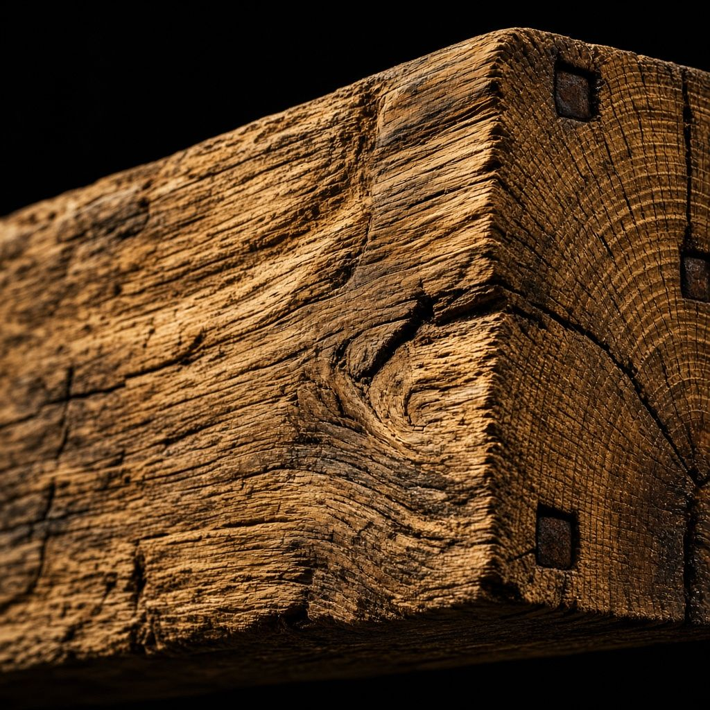
Checks in the grainProduct photoWood mantelDesign inspirationCovered porch headerDesign inspirationBeam table topDesign inspiration
The close-up is a product photo of the hand-hewn wood, including the checks in the grain. Room photos are design inspiration. Your piece is made to order, and we send photos before it ships.
How do I clean and dust a hand-hewn beam or mantel?
Dust a hand-hewn reclaimed beam or mantel with a soft, dry cloth, a lambswool duster, or a vacuum with a soft brush on low. Work along the grain. The adze marks, nail holes, and weathered color are part of the wood, so clean the surface and leave the texture. For a fingerprint or a light mark, wipe with a barely damp cloth and dry the spot at once. Do not soak the beam. Do not use a steam mop, bleach, ammonia, or a harsh cleaner, because they can dull a natural, medium, or dark finish. Do not sand the face. Sanding removes the hand-hewn marks.
What does each finish look like?
These are the four looks people ask about. Ordered beams, mantels, and tables are finished natural (clear), medium, or dark before they ship.
Raw: no film on the wood. You see the weathered gray-brown, the checks, and the tool marks. Hands can darken it, and water can spot it.
Clear matte sealer: a thin clear coat with almost no shine. The color stays close to the raw beam, and a spill beads instead of soaking in at once. This is the look of a natural (clear) finish.
Oil: it soaks in, deepens the amber and the grain, and stays low in sheen. It is not a hard film. Wipe on a thin coat again when the surface looks dry, then wipe off all of the extra. Do not leave a puddle of oil.
Light stain: a thin warm tint, lighter than a medium or dark stain. It evens the color a little. The checks and adze marks still show.
Natural (clear) is the lightest finish we apply, and it is the clear matte look. Medium warms the wood, closer to a light-to-middle stain. Dark deepens the grain and sits well with black window frames and iron. Name the finish on the free quote form. Reclaimed wood will not match another finish exactly, and the adze marks and color shifts are part of the wood.
Are checks and cracks in old wood normal?
Yes. A check is a split that follows the grain. Old hand-hewn beams checked as they dried, often decades ago. A check, a nail hole, or a small crack in the face is normal in reclaimed wood. It does not mean a decorative beam is failing. Wood also moves a little when the humidity in a house changes, so a hairline check can open in the first heating season. That movement is normal. Leave the checks. Filler can pop out when the wood moves, and it covers the history of the beam. If a piece arrives broken, or a crack runs across the beam rather than along the grain, send photos within 48 hours to barndobeamco@agentmail.to or call 1-877-870-BEAM (2326).
Should the beam stay indoors, or can it go on a covered porch?
Use a reclaimed beam indoors, or on a covered porch where the roof keeps rain off it. A porch or entry header is for that covered spot. Keep the beam out of direct weather. Do not set it where rain, a sprinkler, or standing water hits the wood. Direct weather swells the beam, opens checks, and wears a finish off. Indoors, dust the beam and keep standing water off it. The same dusting applies on a covered porch. The roof is what keeps the weather off.
How much heat clearance does a wood mantel need?
Follow your local building code and the clearance listed by the fireplace maker. A wood mantel is combustible. The safe distance from the firebox opening to the wood is set by that listing and by local code, not by a general guess. Read the fireplace manual, and have the installer confirm the mantel height before the beam goes up. If the listing is missing, do not guess. Ask the installer or the local building office. Barndo Beam Co. supplies the wood mantel. The fireplace maker's clearance is the one to follow. For the length of the mantel, see how to size a reclaimed wood fireplace mantel.
How do I care for a beam table top?
Use coasters under glasses, bottles, and plants. Wipe a spill right away, especially water, wine, or oil, then dry the spot. Do not set a hot pan on the wood, and do not use a soaking cloth. On an oiled top, re-oil when water stops beading or the surface looks dry: wipe on a thin coat, let it soak in, and wipe off all of the extra oil. On a clear sealed top, or a bar top with a sealed bar finish, dust and wipe. Do not strip a sealer to re-oil it. Tell us if the top is for dining when you request a free quote, and include your ZIP code.
How do I get a price and a shipping quote?
Use the free quote form, call 1-877-870-BEAM (2326), or email barndobeamco@agentmail.to. Tell us the piece (a ceiling beam, a mantel, a porch header, or a table), the size, the finish (natural, medium, or dark), and your ZIP code. We reply within 2 business days with the wood price and shipping to that ZIP. Quotes are free. Every piece is handcrafted in Oklahoma and shipped in the continental US.
Reclaimed beam care FAQ
How do I clean and dust a hand-hewn reclaimed beam or mantel?
Dust a hand-hewn reclaimed beam or mantel with a soft, dry cloth, a lambswool duster, or a vacuum with a soft brush on low. Work along the grain. The adze marks, nail holes, and weathered color are part of the wood, so clean the surface and leave the texture. For a fingerprint or a light mark, wipe with a barely damp cloth and dry the spot at once. Do not soak the beam. Do not use a steam mop, bleach, ammonia, or a harsh cleaner, because they can dull a natural, medium, or dark finish. Do not sand the face. Sanding removes the hand-hewn marks.
What is the difference between a raw beam, a clear matte sealer, an oil finish, and a light stain?
A raw beam has no film on the wood. You see the weathered gray-brown, the checks, and the tool marks, and water can spot it. A clear matte sealer is a thin clear coat with almost no shine, so the color stays close to the raw beam and a spill beads instead of soaking in at once. That is the look of a natural (clear) finish. An oil soaks in, deepens the amber and the grain, and stays low in sheen. It is not a hard film, and an oiled top can take a thin coat again later. A light stain is a thin warm tint, lighter than a medium or dark stain, and the checks and adze marks still show. Beams, mantels, and tables from Barndo Beam Co. are finished natural (clear), medium, or dark before they ship. Natural is the clear look. Medium warms the wood. Dark deepens the grain. Name the finish on the free quote form. Reclaimed wood will not match another finish exactly.
Are checks and cracks normal in old reclaimed wood?
Yes. A check is a split that follows the grain. Old hand-hewn beams checked as they dried, often decades ago, and a check, a nail hole, or a small crack in the face is normal in reclaimed wood. It does not mean a decorative beam is failing. Wood also moves a little when indoor humidity changes, so a hairline check can open in the first heating season. Leave the checks. Filler can pop out when the wood moves. If a piece arrives broken, or a crack runs across the beam rather than along the grain, send photos within 48 hours to barndobeamco@agentmail.to or call 1-877-870-BEAM (2326).
Can I use a reclaimed beam indoors or on a covered porch?
Use a reclaimed beam indoors, or on a covered porch where the roof keeps rain off it. A porch or entry header is for that covered spot. Keep the beam out of direct weather. Do not set it where rain, a sprinkler, or standing water hits the wood. Direct weather swells the beam, opens checks, and wears a finish off. Indoors, dust the beam and keep standing water off it. Every beam is handcrafted in Oklahoma and shipped in the continental US.
How much heat clearance does a wood fireplace mantel need?
Follow your local building code and the clearance listed by the fireplace maker. A wood mantel is combustible. The safe distance from the firebox opening to the wood is set by that listing and by local code. Read the fireplace manual, and have the installer confirm the mantel height before the beam goes up. If the listing is missing, do not guess. Ask the installer or the local building office. Barndo Beam Co. supplies the wood mantel. The fireplace maker's clearance is the one to follow.
How do I care for a reclaimed beam table top?
Use coasters under glasses, bottles, and plants. Wipe a spill right away, especially water, wine, or oil, then dry the spot. Do not set a hot pan on the wood, and do not use a soaking cloth. On an oiled top, re-oil when water stops beading or the surface looks dry: wipe on a thin coat, let it soak in, and wipe off all of the extra oil. On a clear sealed top, or a bar top with a sealed bar finish, dust and wipe. Do not strip a sealer to re-oil it. Tell us if the top is for dining when you request a free quote, and include your ZIP code.
How do I request a free quote for a beam, mantel, or beam table?
Use the free quote form, call 1-877-870-BEAM (2326), or email barndobeamco@agentmail.to. Tell us the piece (a ceiling beam, a mantel, a porch header, or a table), the size, the finish (natural, medium, or dark), and your ZIP code. We reply within 2 business days with the wood price and shipping to that ZIP. Quotes are free. Every piece is handcrafted in Oklahoma and shipped in the continental US.
Get a free quoteFree quote · Finish and ZIP · Handcrafted in Oklahoma
Mantel install guide
How to install a reclaimed beam mantel
A reclaimed beam mantel is solid wood, and it mounts to the wall above the firebox. Before it goes up, find the studs or confirm the face is solid brick or stone, and check that the wall is level. Three mounts are common: a hidden steel bracket or rods drilled into the back of the beam, lag screws into the studs through a wood cleat, and masonry anchors for brick or stone. A solid beam is heavy, so plan the support and use a carpenter. Clearance above the firebox for a combustible mantel is set by your local building code and by the fireplace or insert manufacturer. Check both. Do not guess a number. Stock mantels have an 8 inch face, are 10 inches deep, and come in 6, 7, 8, 9, and 10 ft lengths. For the length, see how to size a reclaimed wood fireplace mantel. After it is up, see the reclaimed beam care and finish guide. Send the length, the finish, and your ZIP code for a free quote. Every mantel is handcrafted in Oklahoma and shipped in the continental US.
Find the studs, or confirm the fireplace face is solid brick or stone.
Check the wall with a level, side to side and on the face.
Set the mantel height only after you check local building code and the fireplace or insert manual. Check both. Do not guess a clearance number.
Choose a mount: a hidden steel bracket or rods drilled into the back of the beam, lag screws into studs through a wood cleat, or masonry anchors in brick or stone.
Plan for the weight. A solid reclaimed beam is heavy. Use two or more people and a carpenter. Do not hang it on drywall alone.
Send the mantel length, the finish, and your ZIP code for a free quote.
Hand-hewn mantel beamProduct photoStone fireplace mantelDesign inspirationMantel plus two legsDesign inspiration
The close-up is a product photo of the hand-hewn wood. Room photos are design inspiration. Your mantel is made to order, and we send photos before it ships.
What are the common ways to mount a mantel?
Pick the mount that matches the wall. A carpenter should do the work. The mantel is decorative, and Barndo Beam Co. supplies the wood.
Hidden steel bracket or rods: the plate or rods fasten to the wall, and matching holes are drilled into the back of the beam, not the face. The beam slides on so the hardware stays out of sight. This is the usual mount when you want the mantel to look like it floats on a finished wall.
Lag screws into studs through a cleat: a wood cleat is a board lagged into the wall studs. The mantel sits on the cleat, and it is fastened to the cleat so it cannot tip forward. The studs carry the weight, not the drywall.
Masonry anchors for brick or stone: on a masonry fireplace, anchors rated for brick, stone, or concrete go into the solid masonry. They do not go into drywall, and they do not go into a thin veneer that is only stuck to the wall. A carpenter or mason should confirm the face is solid enough to hold the beam.
A mantel-only beam hangs on the wall. A full surround adds two legs beside the opening. Those legs still have to be fastened so they cannot tip. The same carpenter sets that.
How do I find studs and blocking?
Find the studs with a stud finder, then confirm each center before you mark the wall. Studs are often 16 inches apart, and sometimes 24. Mark the centers across the spot where the mantel will sit. Every fastener that carries the beam has to land in a stud or in solid wood blocking. Drywall alone will not hold a solid beam, and plastic drywall anchors are not the support. If the studs miss the spots that need to carry the beam, a carpenter can open the wall and add blocking, or add it before the wall is closed. On a finished wall, line the bracket or the cleat up with the studs you found.
How do I check that the wall is level?
Hold a long level where the mantel will sit. Check side to side, so the shelf will be level, and check the wall face, so one end of the beam will not tilt out from the wall. Brick and stone are often uneven. Shim behind the cleat or the bracket so the mantel reads level even when the stone does not. Set the beam on the mount and check it with the level again before the last fasteners are tightened. Drill the holes in the back of the beam only after the height and the level are set. A tilted mantel is hard to correct after those holes are drilled.
How heavy is a solid reclaimed beam?
A solid reclaimed mantel is real timber, not a hollow box beam. A longer beam weighs more than a shorter one, and a thicker beam weighs more than a thinner one. An 8 inch face by 10 inch deep mantel, in a 6 to 10 ft length, is heavy enough that one person should not lift it onto the wall alone. Plan on two or more people, and have a carpenter or builder do the install. The weight has to go into wall studs or into solid masonry. Drywall, a thin stone veneer that is only stuck to the wall, and plastic anchors are not the support. If you are not sure the wall can hold the beam, stop and ask a carpenter before you drill. Each reclaimed beam is a different piece of wood, so there is no single weight for every mantel. Ask for the weight of your beam on the free quote if your carpenter needs it, and include your ZIP code.
How much fire clearance does a wood mantel need?
Clearance above the firebox for a combustible mantel is set by your local building code and by the fireplace or insert manufacturer. Check both. A wood mantel is combustible. Read the manual for that fireplace or insert, and confirm the clearance with the local building office or your installer. If the manual and the local code do not match, follow the stricter one. Do not copy a height from a photo, and do not guess a number. Set the mantel height only after that clearance is known. Barndo Beam Co. supplies the wood mantel. The code and the fireplace maker set the clearance. For the length of the shelf, see how to size a reclaimed wood fireplace mantel. For dusting and finish after it is up, see the reclaimed beam care and finish guide.
Should I hang the mantel myself?
A homeowner can plan the job: find the studs, check that the wall is level, read the fireplace or insert manual, and check local building code. Hanging the beam is a carpenter's job on most walls, because a solid beam is heavy and the fasteners have to hit studs or solid masonry. If the fireplace is an insert, follow that manufacturer's instructions as well as local code. We recommend a carpenter or builder for the install.
How do I get a mantel price and a shipping quote?
Use the free quote form, call 1-877-870-BEAM (2326), or email barndobeamco@agentmail.to. Tell us the mantel length, the finish (natural, medium, or dark), whether the wall is framed, brick, or stone, and your ZIP code. We reply within 2 business days with the wood price and shipping to that ZIP. Quotes are free. Every mantel is handcrafted in Oklahoma and shipped in the continental US.
Mantel install FAQ
What are the common ways to mount a reclaimed beam mantel?
Three mounts are common. A hidden steel bracket, or steel rods, is drilled into the back of the beam so the hardware stays out of sight. A wood cleat is fastened with lag screws into the wall studs, and the mantel sits on that cleat. On a brick or stone fireplace, masonry anchors go into the solid masonry, not into drywall. Pick the mount that matches the wall. A carpenter should do the install. Barndo Beam Co. supplies the wood mantel, and the mantel is decorative.
How do I find studs or blocking for a mantel?
Find the studs with a stud finder, then confirm each center. Studs are often 16 inches apart, and sometimes 24. Mark the centers where the mantel will sit. The fasteners have to land in studs or in solid wood blocking, not in drywall alone. If the studs miss the spots that need to carry the beam, a carpenter can add blocking. On a finished wall, line the bracket or the cleat up with the studs you found. Do not use drywall anchors for a solid beam.
How do I check that the fireplace wall is level before I hang a mantel?
Hold a long level where the mantel will sit. Check side to side, so the shelf will be level, and check the wall face, so the beam will not tilt out at one end. Brick and stone are often uneven. Shim behind the cleat or the bracket so the mantel reads level even when the stone does not. Check the mantel with the level again before the last fasteners are tightened. Drill the holes in the back of the beam only after the height and the level are set.
How heavy is a solid reclaimed beam mantel, and can the wall hold it?
A solid reclaimed mantel is real timber, not a hollow box. A longer beam weighs more than a shorter one, and a thicker beam weighs more than a thinner one. Plan on two or more people to lift it, and have a carpenter or builder do the install. The weight has to go into wall studs or into solid masonry. Drywall, a thin stone veneer that is only stuck to the wall, and plastic anchors are not the support. If you are not sure the wall can hold the beam, stop and ask a carpenter before you drill. Each reclaimed beam is a different piece of wood, so there is no single weight for every mantel. Ask for the weight of your beam on the free quote if your carpenter needs it, and include your ZIP code.
How much clearance does a combustible mantel need above the firebox?
Clearance above the firebox for a combustible mantel is set by your local building code and by the fireplace or insert manufacturer. Check both. A wood mantel is combustible. Read the manual for that fireplace or insert, and confirm the clearance with the local building office or your installer. If the manual and the local code do not match, follow the stricter one. Do not copy a height from a photo, and do not guess a number. Set the mantel height only after that clearance is known. Barndo Beam Co. supplies the wood mantel. The code and the fireplace maker set the clearance.
Should a homeowner install a reclaimed beam mantel?
A homeowner can plan the job: find the studs, check that the wall is level, read the fireplace or insert manual, and check local building code. Hanging the beam is a carpenter's job on most walls, because a solid beam is heavy and the fasteners have to hit studs or solid masonry. If the fireplace is an insert, follow that manufacturer's instructions as well as local code. We recommend a carpenter or builder for the install.
How do I request a free quote for a reclaimed wood mantel?
Use the free quote form, call 1-877-870-BEAM (2326), or email barndobeamco@agentmail.to. Tell us the mantel length, the finish (natural, medium, or dark), whether the wall is framed, brick, or stone, and your ZIP code. We reply within 2 business days with the wood price and shipping to that ZIP. Quotes are free. Every mantel is handcrafted in Oklahoma and shipped in the continental US.
How to decorate a reclaimed beam mantel for the holidays
Layer a reclaimed beam mantel from the wall outward. Set garland or greenery along the back of the shelf, candles or small objects in front of it, and stockings hanging off the front edge. Leave the firebox opening clear. Weighted stocking holders sit on the shelf and do not put holes in the wood. Keep greenery, ribbons, candles, and stockings away from the fire. A wood mantel is combustible, and so is holiday greenery. Follow the fireplace or insert manufacturer and your local code. Do not guess a clearance number. Stock mantels have an 8 inch face, are 10 inches deep, and come in 6, 7, 8, 9, and 10 ft lengths. For the length, see how to size a reclaimed wood fireplace mantel. For mounting and the wood's own fire clearance, see how to install a reclaimed beam mantel. Order early for the holidays, and ask about current lead times in your free quote. Every mantel is handcrafted in Oklahoma and shipped in the continental US.
Put greenery along the back of the shelf, candles or objects in front of it, and stockings hanging off the front edge. Leave the firebox opening clear.
Hang stockings with weighted holders. Keep screw hooks and nails off the hand-hewn face.
Keep greenery, ribbons, candles, and stockings away from the firebox and from any flame. Follow the fireplace or insert manufacturer and local code. Do not guess a clearance number.
Choose the length and the depth before you order. Stock mantels are 10 inches deep, with an 8 inch face, in 6 to 10 ft lengths.
Order early for the holidays. Ask about current lead times in your free quote. Send the mantel length, the finish, and your ZIP code.
The close-up is a product photo of the hand-hewn wood. Room photos are design inspiration. They show the mantel, not a styled holiday shelf. Your mantel is made to order, and we send photos before it ships.
How do I decorate a reclaimed beam mantel for the holidays?
Start with the shelf empty. A stock mantel is 10 inches deep, so there is room for one row of objects, not a deep display. Put the garland or greenery along the back, against the wall, so it does not drape into the firebox. Set candles and small objects in front of the greenery, and space them so they do not touch it. Hang stockings from the front edge so they fall in front of the fireplace, not on top of the shelf. Leave the center of the firebox clear. A thick garland looks heavy on a hand-hewn beam, so keep it low rather than covering the face. The adze marks and the weathered color are the mantel. Battery candles give the candle look without an open flame on the wood. If you use real candles, keep them in sturdy holders, keep them off the greenery, and never leave them burning unattended. Do not set a candle, a ribbon, or a sprig where it can fall into the firebox.
How do I hang stockings without marking the wood?
A solid reclaimed mantel is finished wood. A hole in the face stays a hole. Use a holder that does not need a screw.
Weighted stocking holders sit on the shelf. The weight stays on top, and the hook drops over the front edge. This is the way to hang stockings without drilling the beam. Set the weight toward the back of the 10 inch shelf so a full stocking does not tip the holder forward.
Small hooks, including cup hooks and nails, leave holes. If you use one, put it on the underside near the front edge, where it is hidden, and keep it off the hand-hewn face. Do not drill the back of the beam. A hidden bracket or rods may already sit there.
Adhesive hooks can pull a natural, medium, or dark finish off when you remove them. Skip adhesive on a finished beam.
Hang the stockings beside the firebox opening, not across it, and keep them clear of candles and greenery. After the holidays, lift the weighted holders off. The wood is unchanged.
How much clearance do candles and greenery need?
Keep flammables away from a working fireplace and away from any flame. Greenery, dried branches, ribbons, paper, and stockings can burn. A wood mantel is combustible too. The safe distance from the firebox opening to the wood is set by your local building code and by the fireplace or insert manufacturer. Decorations follow that same rule. Do not hang greenery, a stocking, or a ribbon into the firebox or into the clearance the manual requires. Do not guess a number of inches. Do not copy a distance from a photo. Read the fireplace or insert manual, and follow local code. If they do not match, follow the stricter one. Battery candles remove the open flame from the shelf. If you burn the fireplace, keep the mantel clear of anything that can fall, swing, or drip into the opening, and do not leave real candles lit. Barndo Beam Co. supplies the wood mantel. The fireplace maker and local code set the clearance. For the height of the beam itself, see how to install a reclaimed beam mantel.
How do I choose the length and the depth before I order?
Set the length and the depth before you plan the styling. Measure the firebox opening, inside edge to inside edge, then add 6 to 12 inches of overhang on each side. That total is the mantel length. The overhang is where the end stockings hang, so they sit beside the opening instead of across it. Stock mantels from Barndo Beam Co. have an 8 inch tall face and are 10 inches deep. Lengths are 6, 7, 8, 9, and 10 ft. Ten inches of depth holds one layer of garland plus stocking holders. If the math lands between stock lengths, round up to the next length, or ask for a custom length. A deeper shelf is a custom size by quote. The wood still has to clear the firebox by whatever your local code and the fireplace maker require. Read how to size a reclaimed wood fireplace mantel for the length, and how to install a reclaimed beam mantel for the mount and the wood's clearance, before you order.
When should I order a mantel for the holidays?
Order early for the holidays. Every mantel is made to order. The timing depends on the size and the wood available, and the estimate comes with your quote. Ask about current lead times in your free quote. This page does not promise a date. Send the mantel length, the finish (natural, medium, or dark), and your ZIP code.
How do I get a mantel price and a shipping quote?
Use the free quote form, call 1-877-870-BEAM (2326), or email barndobeamco@agentmail.to. Tell us the mantel length, the finish (natural, medium, or dark), and your ZIP code, and say it is for the holidays if you want the timing called out. We reply within 2 business days with the wood price and shipping to that ZIP. Quotes are free. Every mantel is handcrafted in Oklahoma and shipped in the continental US.
Holiday mantel FAQ
How do I decorate a reclaimed beam mantel for the holidays?
Layer a reclaimed beam mantel from the wall outward. Set garland or greenery along the back of the shelf so it does not drape into the firebox. Place candles or small objects in front of the greenery, and hang stockings off the front edge. Leave the center of the firebox clear. A stock mantel is 10 inches deep, so plan one row, not a deep display. Use battery candles on the wood. If you use real candles, keep them in sturdy holders, keep them off the greenery, and never leave them burning unattended. Keep every flammable away from the fire, and follow the fireplace or insert manufacturer and your local code. Do not guess a clearance number. Every mantel from Barndo Beam Co. is handcrafted in Oklahoma and shipped in the continental US.
How do I hang stockings on a solid wood beam mantel without damaging it?
Use weighted stocking holders. The weight sits on the shelf and the hook drops over the front edge, so you do not drill the beam. Set the weight toward the back of the 10 inch shelf so a full stocking does not tip the holder. Hang the stockings beside the firebox opening, not across it, and keep them clear of candles and greenery. A small screw hook or nail leaves a hole that stays. If you use a small hook, put it on the underside near the front edge, and keep it off the hand-hewn face. Do not drill the back of the beam where a hidden bracket or rods may already sit. Skip adhesive hooks. They can pull a natural, medium, or dark finish off when you remove them. After the holidays, lift the weighted holders off and the wood is unchanged.
How much clearance do candles and greenery need from a working fireplace?
Keep flammables away from a working fireplace and away from any flame. Greenery, dried branches, ribbons, paper, and stockings can burn, and a wood mantel is combustible too. The safe distance from the firebox opening to the wood is set by your local building code and by the fireplace or insert manufacturer. Decorations follow that same rule. Do not hang greenery, a stocking, or a ribbon into the firebox or into the clearance the manual requires. Do not guess a number of inches, and do not copy a distance from a photo. Read the fireplace or insert manual, and follow local code. If they do not match, follow the stricter one. Battery candles remove the open flame from the shelf. If you burn the fireplace, keep the mantel clear of anything that can fall, swing, or drip into the opening, and do not leave real candles lit. Barndo Beam Co. supplies the wood mantel. The fireplace maker and local code set the clearance.
How do I choose mantel length and depth before the holidays?
Measure the firebox opening, inside edge to inside edge, then add 6 to 12 inches of overhang on each side. That total is the mantel length. The overhang is where the end stockings hang, so they sit beside the opening instead of across it. Stock mantels from Barndo Beam Co. have an 8 inch tall face and are 10 inches deep, in 6, 7, 8, 9, and 10 ft lengths. Ten inches of depth holds one layer of garland plus stocking holders. If the math lands between stock lengths, round up to the next length, or ask for a custom length. A deeper shelf is a custom size by quote. The wood still has to clear the firebox by whatever your local code and the fireplace maker require. See how to size a reclaimed wood fireplace mantel and how to install a reclaimed beam mantel.
When should I order a reclaimed wood mantel for the holidays?
Order early for the holidays. Every mantel is made to order, so the timing depends on the size and the wood available. Ask about current lead times in your free quote. The estimate comes back with the quote. This page does not promise a date. Send the mantel length, the finish (natural, medium, or dark), and your ZIP code. Every mantel is handcrafted in Oklahoma and shipped in the continental US.
How do I request a free quote for a holiday mantel?
Use the free quote form, call 1-877-870-BEAM (2326), or email barndobeamco@agentmail.to. Tell us the mantel length, the finish (natural, medium, or dark), and your ZIP code, and say it is for the holidays if you want the timing called out. We reply within 2 business days with the wood price and shipping to that ZIP. Quotes are free. Every mantel is handcrafted in Oklahoma and shipped in the continental US.
Hand-Hewn vs. Resawn vs. Faux Beams: How to Tell Real Reclaimed Wood
Hand-hewn, resawn, and faux beams are three different things. A hand-hewn beam was shaped with an adze or a broad axe, so the face is uneven and covered with short scooped or faceted tool marks. Resawn or rough-sawn reclaimed wood was cut on a circular saw or a band saw, so the face shows repeating arcs or fine parallel saw lines and is flatter than a hewn face. A faux beam is new lumber built into a hollow box, or molded foam, finished to look old. It is light, the edges are crisp, and it has no nail holes, mortise pockets, or deep checks. Barndo Beam Co. beams, mantels, and tables are hand-hewn reclaimed wood, including hollow box beams made from that same reclaimed wood. They are not foam, and they are not new lumber. Every piece is handcrafted in Oklahoma, shipped in the continental US. Send the piece, the finish, and your ZIP code for a free quote.
Scooped or faceted adze and broad-axe marks, and an uneven surface, mean hand-hewn. Repeating arcs or fine parallel lines mean a circular saw or a band saw.
Check how it is built: solid timber, a hollow box of reclaimed wood, a box of new lumber, or foam.
Look for nail holes, mortise pockets, checks along the grain, uneven patina, and real weight.
Match the beam to the use: a mantel or a table people touch, a feature ceiling beam, or a light faux beam only where it stays out of reach.
Ask the seller for close photos of the face and the end, what the piece weighs, and whether the wood is reclaimed.
Send the piece, the size, the finish, and your ZIP code for a free quote.
Hand-hewn faceProduct photoChecks and nail holesProduct photo
Both photos are product photos of hand-hewn reclaimed wood: the scooped face, the checks, and the nail holes. Your piece is made to order, and we send photos before it ships.
What does hand-hewn mean?
Hand-hewn means the faces were shaped by hand with an adze or a broad axe, not by a saw. An adze leaves short, scooped cuts. A broad axe leaves longer facets. The cuts change direction, and they overlap. The face is uneven: high spots and low spots, not one flat plane. The edges wander. You will not see a repeating circular arc, or a set of straight parallel saw lines, running across a hewn face. The end of a mantel is often sawn square when the beam is cut to length. That end cut is not the face. Read the long faces. The photos above are product photos of that hand-hewn face.
How does resawn or rough-sawn reclaimed wood differ?
Resawn means an old timber was cut again on a saw. Rough-sawn means the mill left the saw texture instead of planing the face smooth. A circular saw leaves repeating arcs, like a stack of crescents, across the face. A band saw leaves fine, fairly straight, parallel lines. Those marks are even, and the face is flatter than a hand-hewn face. The wood can still be old. Nail holes, checks, and gray patina can remain on a surface that was not resawn, while the fresh-sawn face looks lighter and shows the saw pattern. A hewn beam and a resawn beam can come from the same kind of old timber. The tool that shaped the face is what you are looking at. Saw marks alone do not prove the wood is old. Nail holes, checks, and patina do.
What do faux beams of new lumber or foam look like?
A faux beam is made to imitate a timber. Two kinds are common. A hollow box made from real reclaimed wood is a third thing, and it is not faux.
New lumber: flat boards joined into a U-shape or a hollow rectangle. The faces are flat. The edges are crisp and square. The grain looks consistent and new. A stain is often one even brown. You will not find old nail holes, a mortise pocket, or a deep check from decades of drying. A corner may show a miter or a butt joint. A box of new boards is much lighter than a solid timber of the same outside size.
Foam: molded foam is lighter still. The texture can repeat, because it was cast in a mold. The color is paint on the surface, not a stain that soaked into the grain. Tap it and it sounds thin. It can flex or dent. The ends are often capped. It does not have the weight, the iron-stained nail holes, or the deep checks of old wood.
A real hollow box: Barndo Beam Co. hand-hewn box beams are three-sided hollow beams made from reclaimed wood that still shows adze and axe marks. They are open on top so they slip over a mounting board. They are lighter than a solid timber, and they are not foam and not new lumber. Ask which of the three you are being shown.
What are the signs of real age?
Look for marks that took years, not a stain.
Nail holes: square holes from old nails, round spike holes, or dark iron stains around the hole. A face with none, on wood sold as very old, is a question to ask.
Mortise pockets: a rectangular pocket, a round peg hole, or a notch cut where the timber joined a frame. New lumber and foam do not have these.
Checking: a check is a split that follows the grain. Old beams checked as they dried. The split is in the wood, not a groove pressed into foam. A check does not mean a decorative beam is failing.
Patina: the color is uneven. Gray, amber, and brown sit in the high spots and down in the tool marks. A faux stain is more even, and it sits on a smooth face.
Weight: solid old timber is heavy for its size. Foam of the same outside size is light. A new-lumber box falls in between. Each reclaimed beam is a different piece of wood, so there is no single weight. Ask for the weight of the piece you are buying.
What are the pros, cons, and best uses of each?
Hand-hewn reclaimed wood shows an uneven face and axe marks from across a room, and it holds up when someone stands close to a mantel or a table. It is heavy. A ceiling full of solid beams needs a carpenter and real support. A table top sometimes needs one face flattened so plates sit level, while the edge and the legs stay hewn. Best uses are a fireplace mantel, one or a few ceiling beams, and a dining, coffee, or console table where the hewn face shows. Stock mantels have an 8 inch face and are 10 inches deep, in 6, 7, 8, 9, and 10 ft lengths. Solid ceiling beams are 8 by 8 or 10 by 10, in 8, 12, 16, and 20 ft lengths. For the mantel length, see how to size a reclaimed wood fireplace mantel. For the ceiling count and spacing, see how to size and space decorative ceiling beams. For a dining, coffee, or console table, see how to size a custom reclaimed wood dining table and how to size a custom reclaimed wood coffee or console table. These pieces are decorative unless a builder or a structural engineer approves one to carry a load.
Resawn or rough-sawn reclaimed wood has a flatter face, so it is easier to join into a wide table top or a long shelf, and the lines of a ceiling look straighter. You give up the scooped axe texture on the sawn face. A fresh-sawn surface can look newer than the weathered face next to it. Best uses are a table top that has to be flat, a mantel shelf you want flatter, or ceiling beams when a straighter line matters more than axe marks. Confirm the timber is actually reclaimed.
Faux beams of new lumber or foam are light, so a foam beam or a thin lumber box is easier to hang on a finished ceiling, and the sizes are uniform. Foam will not check as indoor humidity changes. Up close, the even stain, the crisp edges, the repeating texture, and the low weight give them away. Foam can dent. The best use is a decorative ceiling seen from across the room, when weight is the limit and nobody will touch the face. A mantel and a table are pieces people touch. Use real reclaimed wood there.
What should I ask a seller?
Ask these before you buy. The answers should match the photos.
Was this face shaped with an adze or a broad axe, or was it cut on a circular saw or a band saw?
Is the piece solid timber, a hollow box made from reclaimed wood, a box of new lumber, or foam?
Can you send close photos of the long face, the end, and any nail holes, mortise pockets, or checks?
Is the color original patina, or a stain or paint on newer wood?
About how much does this piece weigh?
Is it sold as decorative, or is someone claiming it will carry a load? A load needs a builder or a structural engineer.
Will I see photos of my exact piece before it is cut or before it ships?
Use the free quote form, call 1-877-870-BEAM (2326), or email barndobeamco@agentmail.to. Tell us the piece (a solid ceiling beam, a hand-hewn box beam, a mantel, or a table), the size, the finish (natural, medium, or dark), and your ZIP code. Say if you want the hand-hewn face. We reply within 2 business days with the wood price and shipping to that ZIP. Quotes are free. Every piece is handcrafted in Oklahoma, shipped in the continental US.
Hand-hewn vs. faux FAQ
What does hand-hewn mean on a reclaimed wood beam?
Hand-hewn means the faces were shaped with an adze or a broad axe, not with a saw. An adze leaves short scooped cuts. A broad axe leaves longer facets. The cuts overlap and change direction, so the face is uneven, with high spots and low spots, and the edges wander. A hewn face does not show repeating circular arcs or straight parallel saw lines. The end of a beam is often sawn square when it is cut to length. Read the long faces, not that end cut.
How is resawn or rough-sawn reclaimed wood different from hand-hewn?
Resawn wood is old timber cut again on a saw. Rough-sawn means the saw texture was left on the face instead of being planed smooth. A circular saw leaves repeating arcs across the face. A band saw leaves fine, fairly straight, parallel lines. The face is flatter and more even than a hand-hewn face. The timber can still be old. Nail holes, checks, and gray patina can remain on a surface that was not resawn, while the fresh-sawn face looks lighter and shows the saw pattern. Saw marks alone do not prove the wood is old.
What do faux beams made of new lumber or foam look like?
A faux beam imitates a timber. A new-lumber box is flat boards joined into a U-shape or a hollow rectangle. The faces are flat, the edges are crisp and square, the grain looks new, and the stain is often one even brown. It has no old nail holes, mortise pockets, or deep checks, and it is much lighter than solid timber of the same outside size. Molded foam is lighter still. The texture can repeat, the color is paint on the surface, it sounds thin when tapped, and it can flex or dent. A hollow box can still be real reclaimed wood. A Barndo Beam Co. hand-hewn box beam is three-sided, made from reclaimed wood that still shows adze and axe marks, and it is not foam and not new lumber.
What are the signs of real age in reclaimed wood?
Look for nail holes or spike holes, often with dark iron stain, and for mortise pockets, peg holes, or notches where the timber joined a frame. A check is a split that follows the grain, left as the beam dried. Patina is uneven gray, amber, and brown that sits down in the tool marks, not one even coat of stain on the surface. Weight is the other test. Solid old timber is heavy for its size. Foam of the same outside size is light, and a new-lumber box falls in between. Each reclaimed beam is different, so ask for the weight of the piece you are buying.
Should I choose a hand-hewn beam, resawn reclaimed wood, or a faux beam for a mantel, ceiling, or table?
Choose hand-hewn reclaimed wood for a fireplace mantel, a feature ceiling beam, or a table people will touch. The uneven face and the axe marks hold up at close range. Solid beams are heavy, so plan support with a carpenter. Choose resawn or rough-sawn reclaimed wood when you want a flatter face for a table top or a straighter ceiling line, and confirm the timber is actually old. Choose a faux beam of new lumber or foam only for a lightweight decorative ceiling seen from across the room. It will not pass a close look on a mantel or a table. Barndo Beam Co. beams, mantels, and tables are hand-hewn reclaimed wood, handcrafted in Oklahoma, shipped in the continental US. They are decorative unless a builder or a structural engineer approves a piece to carry a load.
What questions should I ask before I buy a reclaimed beam?
Ask whether the face was shaped with an adze or a broad axe, or cut on a circular saw or a band saw. Ask whether the piece is solid timber, a hollow box of reclaimed wood, a box of new lumber, or foam. Ask for close photos of the long face, the end, and any nail holes, mortise pockets, or checks. Ask whether the color is original patina or a stain on newer wood, and ask what the piece weighs. Ask whether it is sold as decorative. A beam that has to carry a load needs a builder or a structural engineer. Ask whether you will see photos of your exact piece before it ships.
How do I request a free quote for a hand-hewn beam, mantel, or table?
Use the free quote form, call 1-877-870-BEAM (2326), or email barndobeamco@agentmail.to. Tell us the piece (a solid ceiling beam, a hand-hewn box beam, a mantel, or a table), the size, the finish (natural, medium, or dark), and your ZIP code. We reply within 2 business days with the wood price and shipping to that ZIP. Quotes are free. Every piece is handcrafted in Oklahoma, shipped in the continental US.
Get a free quoteFree quote · Piece, finish, and ZIP · Handcrafted in Oklahoma
Beam ideas by room
Beam Ideas by Room
Hand-hewn reclaimed beams, mantels, and custom beam tables do different jobs in different rooms. A great room or living room wants beams across the ceiling. A kitchen wants those beams kept clear of the range hood. A fireplace wants a mantel beam, or a mantel plus two legs. A dining room wants a beam table under the ceiling beams. An entry wants a beam console, and a covered porch wants a header under the roof. A bedroom usually wants one beam over the bed. The photos below are design inspiration for where a piece can sit. The beams, mantels, and tables are decorative unless a builder or a structural engineer approves one to carry a load. Every piece is handcrafted in Oklahoma, shipped in the continental US. Send the room, the piece, the finish, and your ZIP code for a free quote.
In a great room or living room, run the beams the long way and leave a clear gap for the ceiling fan and the lights.
In a kitchen, set the ceiling beams clear of the range hood, and follow the hood and range maker's clearance.
At a fireplace, use a mantel beam, or a mantel plus two legs, and set the height from local code and the fireplace or insert maker.
In a dining room, center a beam table under the ceiling beams and match the finish.
In an entry, use a beam console. On a porch, use a header only under a roof, out of direct weather.
In a bedroom, one beam over the bed is usually enough. Keep it clear of the fan and the light.
Send the room, the piece, the finish, and your ZIP code for a free quote.
Room photos are design inspiration for placement. They are not photos of a finished order. Your piece is made to order, and we send photos before it ships.
Great room and living room ceilings
Run the beams the long way of the room so the ceiling reads as one span, and leave a clear gap for the fan and the lights. On a tall great room, a larger face still reads from the sofa. On a living room ceiling closer to 8 or 9 feet, use fewer beams, or hollow box beams, so the timber does not drop into the room. If the ceiling is vaulted, say whether the beams follow the slope or sit on the flat part, and send a photo of the ceiling with the quote. Match the finish to the mantel when the fireplace is in the same room. For the face, the count, and the on-center spacing, see how to size and space decorative ceiling beams.
Kitchen ceilings and range hoods
A kitchen ceiling is seen from closer, so stop the beams short of the range hood or run them beside it. The hood and the duct stay clear that way. A vent duct is larger than the hollow of a box beam, so plan the duct with your builder before the beams are ordered. Do not assume a beam can hide it. Any wood near a working range, including a wood face around the hood, has to sit outside the clearance the range and hood maker require. Do not guess that number, and do not copy a gap from a photo. A wood hood surround is a separate piece from the ceiling beams. Say so on the quote if you want one. For how far apart to set the ceiling beams, see how to size and space decorative ceiling beams.
Center the table under the ceiling beams so a beam is not sitting over the end chair. Order the table in the same finish as those beams: natural, medium, or dark. No two pieces of reclaimed wood match exactly. A trestle or beam-leg base keeps the wood in the room. A steel base is the quieter choice when the ceiling is already full of timber. For seats, length, and width, see how to size a custom reclaimed wood dining table. For coasters and spills, see the reclaimed beam care and finish guide.
Entryways and porches
Inside the door, a beam console gives the entry a timber line without a ceiling full of beams. Leave walking room in front of it. For the length and the height, see how to size a custom reclaimed wood coffee or console table. Outside, a porch or entry header spans the door only where the roof keeps rain off the wood. Do not set a beam where rain, a sprinkler, or standing water hits it, and do not use a header on an open deck with no roof. For that limit, and for the finish, see the reclaimed beam care and finish guide.
Bedrooms
A bedroom usually wants one beam, not a grid. Center it over the bed, running the width of the bed or a little past the nightstands, and keep it clear of the ceiling fan and the light. On a lower bedroom ceiling, a hollow box beam keeps the weight down and the face from crowding the bed. A solid beam suits a taller ceiling. Tell us the ceiling height, and say the beam is over the bed, when you request a quote. For solid versus box, see how to size and space decorative ceiling beams.
How do I get a price and a shipping quote?
Use the free quote form, call 1-877-870-BEAM (2326), or email barndobeamco@agentmail.to. Tell us the room, the piece, the size, the finish (natural, medium, or dark), and your ZIP code. Name the other beams or the mantel you want it to sit with. We reply within 2 business days with the wood price and shipping to that ZIP. Quotes are free. Every piece is handcrafted in Oklahoma, shipped in the continental US.
Beam ideas by room FAQ
How are hand-hewn reclaimed beams used on a great room or living room ceiling?
Run the beams the long way of the room and leave a clear gap for the fan and the lights. A tall great room can take a larger face, and a lower living room ceiling usually wants fewer beams or hollow box beams. For the face, the count, and the spacing, see how to size and space decorative ceiling beams.
How do I use reclaimed beams on a kitchen ceiling or around a range hood?
Set the ceiling beams across the kitchen and stop them short of the hood, or run them beside it, so the hood and the duct stay clear. Any wood near a working range has to sit outside the clearance the range and hood maker require, so do not guess that number. For spacing, see how to size and space decorative ceiling beams.
Should a fireplace get one mantel beam or a mantel plus two legs?
How do I use a beam table in a dining room that also has ceiling beams?
Center the beam table under the ceiling beams and order it in the same finish: natural, medium, or dark. Choose a trestle or beam-leg base when you want the wood to show, or a steel base when the ceiling is already full of timber. For seats, length, and width, see how to size a custom reclaimed wood dining table.
Can I use a reclaimed beam in an entryway or on a porch?
Center one beam over the bed, running the width of the bed or a little past the nightstands, and keep it clear of the ceiling fan and the light. On a lower bedroom ceiling, a hollow box beam keeps the weight down and the face from crowding the bed. For solid versus box, see how to size and space decorative ceiling beams.
How do I request a free quote for beams, a mantel, or a beam table for a room?
Use the free quote form, call 1-877-870-BEAM (2326), or email barndobeamco@agentmail.to, and tell us the room, the piece, the size, the finish (natural, medium, or dark), and your ZIP code. We reply within 2 business days with the wood price and shipping to that ZIP. Quotes are free, and every piece is handcrafted in Oklahoma, shipped in the continental US.
Get a free quoteFree quote · Room, finish, and ZIP · Handcrafted in Oklahoma
Barndo beam design guide
Barndominium Beam Design Guide: Where Hand-Hewn Beams Work in an Open Barndo
Hand-hewn beams in an open barndominium do a few specific jobs. On a tall great-room ceiling they give the span a line you can see from the sofa. Across an open kitchen and living room they can stop, or change spacing, so the two zones read as two places. On a tall fireplace wall, a mantel plus two legs holds its own better than one thin shelf. Over a wide doorway or a cased opening, a beam header is a decorative accent. On a covered porch, a header sits under the roof. Next to metal siding, black window frames, or a steel stair, the rough wood is the contrast. The beams, mantels, and headers are decorative unless a builder or a structural engineer approves one to carry a load. The photos below are design inspiration. Every piece is handcrafted in Oklahoma, shipped in the continental US. Send the ceiling height, the pieces, the finish, and your ZIP code for a free quote.
On a ceiling about 12 feet or taller, use a 10 by 10 face so the beam reads from across the room. Run the beams the long way, and leave a clear gap for the fan and the lights.
Stop the kitchen beams at the island or the cabinet line, or use tighter spacing over the kitchen and wider spacing over the living room. Keep the beams clear of the range hood.
On a tall fireplace wall, use a mantel plus two legs so the opening is framed. Keep the shelf at the height local code and the fireplace maker require. Do not lift the mantel to fill the wall.
A beam header over a wide doorway or cased opening is a decorative accent. Measure the clear opening. Have a builder handle anything that has to carry a load.
Use a header on a covered porch, under the roof and out of the rain. Inside the entry, use a beam console.
Natural or medium warms black window frames and a steel rail. Dark sits closer to black metal. Use the same finish on the beams and the mantel.
Send the ceiling height, the pieces, the finish, and your ZIP code for a free quote.
Tall open great roomDesign inspirationBeams on a tall ceilingDesign inspirationKitchen zoneDesign inspirationMantel on a tall wallDesign inspirationHeader over an openingDesign inspirationCovered porch headerDesign inspiration
Room photos are design inspiration for placement in an open barndo. They are not photos of a finished order. The beams, mantels, and headers we sell are decorative. Your piece is made to order, and we send photos before it ships.
Open great rooms with tall ceilings
An open barndo great room is often one tall volume. The ceiling may sit well above 9 feet, and it may be vaulted. From the sofa, a small beam disappears. On a ceiling about 12 feet or taller, or across a wide room, a 10 by 10 face is the stock solid size that still reads. An 8 by 8 is the usual face on a ceiling about 9 to 12 feet. Stock solid and box beams come in 8, 12, 16, and 20 ft lengths. Run the beams the long way of the room and leave a clear gap for the ceiling fan and the lights. On a vault, say whether the beams follow the slope or sit on the flat part, and send a photo of the ceiling with the quote.
Wider spacing keeps a tall ceiling open. About 6 feet on center pairs with a 10 by 10, so each beam still reads and the ceiling does not feel filled in. About 4 feet on center is the tighter rhythm. For the count and the math, see how to size and space decorative ceiling beams. For other rooms in the same house, see beam ideas by room.
A hollow box beam is the lighter way to put that face on a finished ceiling. It is a three-sided beam, open on top, so it slips over a mounting board. A solid beam is heavy. Plan the mount with a carpenter or builder. Neither beam is sold to carry a roof or a floor. If a beam has to carry a load, have a builder or a structural engineer approve it first.
Defining the kitchen and the living room
In an open barndo the kitchen and the living room share one ceiling. Beams can draw the line between them without a wall. Stop the kitchen beams at the island, at the end of the cabinets, or where the flooring changes, and leave the living ceiling with fewer beams, or with none. Or keep beams in both zones and change the spacing: about 3 feet on center over the kitchen, and about 4 or 6 feet on center over the living room. The tighter rhythm marks the kitchen. The wider rhythm keeps the living room open. Use one finish in both zones, natural, medium, or dark, so the open room still feels like one house. No two pieces of reclaimed wood match exactly.
Keep every beam clear of the range hood and the duct. Stop the beams short of the hood, or run them beside it. Any wood near a working range has to sit outside the clearance the range and hood maker require. Do not guess that number, and do not copy a gap from a photo. For spacing, see how to size and space decorative ceiling beams.
Mantels on a tall fireplace wall
A barndo fireplace wall often runs high, sometimes to the same tall ceiling as the great room. A stock mantel has an 8 inch face and is 10 inches deep. That shelf is the right size for the fire. It is not meant to fill the wall above it.
Keep the mantel at the height your local code and the fireplace or insert maker require. Do not raise it to the middle of a tall wall. The wall above the mantel stays open. Do not guess a clearance, and do not copy a height from a photo.
On a tall wall, use a mantel plus two legs. The legs frame the opening, so the wood has height as well as a shelf. One mantel beam is enough when you only want the shelf and the wall is not towering over the fire.
Use the longer overhang on a tall wall. Add 6 to 12 inches past the firebox on each side. Six inches looks tighter. Twelve inches looks heavier and suits a thick beam on a big wall. For the length, see how to size a reclaimed wood fireplace mantel.
A one-of-a-kind mantel beam has a face that is usually 8 to 10 inches. That is the heavier shelf. It still sits at the height the code and the fireplace maker set. It does not climb the wall.
A wide doorway, a cased opening between rooms, or the opening under a loft is a place for one beam, used as a decorative header. It marks the passage. It is not the framing that holds up the wall or the floor above. Measure the clear opening, then the length you want the beam to run past each side. Porch and entry headers are 8 by 10 or 10 by 12, in 6, 8, 10, and 12 ft lengths, and longer by quote. A wide interior opening can use those sizes. If the run is longer than 12 ft, a ceiling beam length, 8, 12, 16, or 20 ft, can be quoted as a decorative header. Say that it is a header over an opening, not a ceiling beam, so the ends and the finish are planned for eye level.
Have a builder or a structural engineer handle anything that has to carry a load. Barndo Beam Co. supplies the wood. The header is decorative unless that pro approves it. A carpenter should do the install. Solid timber is heavy.
Porch and entry accents
Outside, use a header only on a covered porch, under the roof, where rain and sprinklers do not hit the wood. Do not set a beam on an open deck with no roof. Stock headers are 8 by 10 or 10 by 12. The rough face against metal siding is the accent. For weather and finish, see the reclaimed beam care and finish guide.
Inside the front door, a beam console gives the entry a timber line without a ceiling full of beams. Leave walking room in front of it. For the length and the height, see how to size a custom reclaimed wood coffee or console table. A header on the dry side of a wide entry opening is the same idea as the porch header, kept indoors.
Mixing beams with metal and steel
A barndo interior often has metal siding, black window frames, a steel stair rail, and a metal hood. Hand-hewn wood works next to that metal because the faces are different. The beam is uneven, with adze marks. The metal is smooth. Put the wood where the eye already goes: a few beams on the tall ceiling, the mantel, a header over the stair opening, and the porch header against the siding. One or a few beams read stronger against metal than a ceiling packed with timber.
Natural (clear) or medium warms black frames and a steel rail. Dark deepens the grain and sits closer to black window frames and iron. Hold a sample of the metal or the cabinet color next to the three finishes and pick the closest one. Reclaimed wood will not match a paint color exactly. Order the mantel and the ceiling beams in the same finish. A beam-top table on a steel base is the same mix in the furniture. For that base, see how to size a custom reclaimed wood dining table and how to size a custom reclaimed wood coffee or console table.
Questions to ask before you order
What is the ceiling height, from the finished floor to the finished ceiling, and is the ceiling flat or vaulted?
Which way will the beams run, and how long is each span?
Do you want a solid beam or a hollow box beam?
Where does the kitchen stop and the living room start, and should the beams stop or change spacing there?
For a mantel: what is the firebox width, do you want one beam or a mantel plus two legs, and is the wall framed, brick, or stone? The height comes from local code and the fireplace maker.
For a header: what is the clear width of the opening? Anything that has to carry a load is a decision for a builder or a structural engineer.
Is the beam indoors or on a covered porch? A porch header stays under a roof.
Which finish, natural, medium, or dark, sits best next to the metal, the cabinets, or the floors?
What is the ship-to ZIP code?
Can you send a photo of the ceiling, the fireplace wall, or the opening?
How do I get a price and a shipping quote?
Use the free quote form, call 1-877-870-BEAM (2326), or email barndobeamco@agentmail.to. Tell us the ceiling height, the pieces, the sizes, the finish (natural, medium, or dark), and your ZIP code. Name the metal, the mantel, or the opening you want the wood to sit with. We reply within 2 business days with the wood price and shipping to that ZIP. Quotes are free. Every piece is handcrafted in Oklahoma, shipped in the continental US.
Open barndo beam FAQ
How do I use hand-hewn beams in an open barndo great room with a tall ceiling?
On a ceiling about 12 feet or taller, or across a wide open great room, use a 10 by 10 face so the beam reads from the sofa. An 8 by 8 is the usual face when the ceiling is about 9 to 12 feet. Run the beams the long way and leave a clear gap for the fan and the lights. On a vault, say whether the beams follow the slope or sit on the flat part. Wider spacing, about 6 feet on center with a 10 by 10, keeps a tall ceiling open. A hollow box beam is the lighter face on a finished ceiling. These beams are decorative unless a builder or a structural engineer approves one to carry a load. For the count and the spacing, see how to size and space decorative ceiling beams.
How do ceiling beams define a kitchen and a living zone in an open barndo?
Stop the kitchen beams at the island, the end of the cabinets, or a change in the flooring, and leave the living ceiling with fewer beams or none. Or use about 3 feet on center over the kitchen and about 4 or 6 feet on center over the living room, in the same finish. Keep the beams clear of the range hood and the duct, and follow the clearance the range and hood maker require. Do not guess that number. For spacing, see how to size and space decorative ceiling beams.
How do I scale a reclaimed wood mantel on a tall fireplace wall?
Keep the mantel at the height your local code and the fireplace or insert maker require. Do not raise it to fill a tall wall, and do not copy a height from a photo. On a tall wall, use a mantel plus two legs so the opening is framed. Add 6 to 12 inches of overhang on each side of the firebox. Twelve inches looks heavier on a big wall. A stock mantel has an 8 inch face and is 10 inches deep. See how to size a reclaimed wood fireplace mantel and how to install a reclaimed beam mantel.
Can a decorative beam header mark a wide opening or doorway?
Yes, as a decorative accent. Measure the clear opening. Porch and entry headers are 8 by 10 or 10 by 12, in 6, 8, 10, and 12 ft lengths, and longer by quote. A longer run can be quoted as a ceiling-beam length used as a header. The header does not replace framing that carries a wall or a floor. Have a builder or a structural engineer handle anything that has to carry a load. A carpenter should do the install.
Where do porch and entry beams work on a barndominium?
How do hand-hewn beams work with a metal or steel barndo interior?
Put a few hand-hewn beams where the eye already goes: the tall ceiling, the mantel, a header over a stair opening, and a porch header against metal siding. Natural or medium warms black window frames and a steel rail. Dark sits closer to black metal. Use the same finish on the beams and the mantel. Reclaimed wood will not match a paint color exactly. The beams are decorative.
How do I request a free quote for beams in an open barndo?
Use the free quote form, call 1-877-870-BEAM (2326), or email barndobeamco@agentmail.to. Tell us the ceiling height, the pieces, the sizes, the finish (natural, medium, or dark), and your ZIP code. We reply within 2 business days with the wood price and shipping to that ZIP. Quotes are free, and every piece is handcrafted in Oklahoma, shipped in the continental US.
Get a free quoteFree quote · Ceiling height, finish, and ZIP · Handcrafted in Oklahoma
Range hood beam guide
Range Hood Beam Guide: How to Size a Hand-Hewn Beam for a Kitchen Hood
A hand-hewn reclaimed beam can sit as a hood mantel across the top of a kitchen range hood. Measure the hood, then add overhang on each side so the beam reads wider than the hood. A stock mantel has an 8 inch face and is 10 inches deep, in 6, 7, 8, 9, and 10 ft lengths. Keep the wood outside the clearance your hood manufacturer lists, and outside what local code requires. Do not guess that distance. A qualified installer mounts the beam so the hood, the duct, and the filters still work. Order it in the same finish as a fireplace mantel or the ceiling beams. Every piece is handcrafted in Oklahoma, shipped in the continental US. Send the hood width, the length, the finish, and your ZIP code for a free quote.
Measure the range hood, outside edge to outside edge, not the cooktop.
Add overhang on each side. Six inches looks tighter. Twelve inches looks heavier. If cabinets flank the hood, stop the beam short of the cabinet doors.
Use a stock mantel face when it fits: 8 inches tall and 10 inches deep, in 6, 7, 8, 9, or 10 ft. A taller face or a deeper shelf is a custom size by quote.
Set the height from the hood manufacturer's clearance and from local code. Do not copy a gap from a photo.
Have a qualified installer mount the beam into studs, blocking, or solid masonry. Leave the duct, the filters, and the hood controls clear.
Choose natural, medium, or dark, and use that same finish on a matching mantel or ceiling beams.
Send the hood width, the beam length, the finish, and your ZIP code for a free quote.
Kitchen beams clear of the hoodDesign inspirationHand-hewn hood beamProduct photoFace near the rangeProduct photo
The kitchen photo is design inspiration for placement. It is not a photo of a finished order. The close-ups are product photos of the hand-hewn wood. Your beam is made to order, and we send photos before it ships.
How do I size the beam to the hood width?
Measure the hood body, outside edge to outside edge, in inches. Do not measure the cooktop. The hood is usually wider than the burners, and the beam is sized to the hood. Add overhang on each side so the beam extends past the metal. Six inches of overhang on each side looks tighter and keeps the beam close to the hood. Twelve inches looks heavier and suits a thick hand-hewn beam on a wide wall.
A 48 inch hood plus 12 inches on each side is 72 inches, which is a 6 ft beam. A 36 inch hood plus 12 inches on each side is 60 inches. That is shorter than the 6 ft stock minimum, so a 6 ft beam leaves about 18 inches of overhang on each side when it is centered. Stock lengths are 6, 7, 8, 9, and 10 ft. If the math lands between those lengths, round up to the next stock length, or ask for a custom length. If cabinets flank the hood, the overhang may have to stop short of the cabinet doors so the doors still open. Measure that gap and say so on the quote. This overhang is for looks. It is not a heat clearance.
What face height and depth should a hood mantel be?
People stand at the range, so the face is seen up close. A stock mantel has an 8 inch tall face and is 10 inches deep. That is the usual hood mantel: tall enough to read above the hood, and deep enough for a short shelf that does not stick far into the walkway. A one-of-a-kind beam often has a face of about 8 to 10 inches. A taller face or a deeper shelf is a custom size by quote. On a tall kitchen wall, a heavier face still reads from the island. On a wall with upper cabinets tight to the hood, an 8 inch face is usually enough, and a deeper beam can crowd the cook. Tell us the hood depth and how much wall is above the hood.
The hood piece is a solid mantel-style beam. A hollow box beam is for a ceiling: it is open on top and slips over a mounting board. Use a box beam, or a solid ceiling beam, for the span of the kitchen, and use the solid mantel beam at the hood. For the ceiling face and the spacing, see how to size and space decorative ceiling beams.
Clearance and heat
A wood beam is combustible. The safe distance from the cooking surface, and from the hood, is set by the hood manufacturer and by local code. Read the hood manual. Follow that clearance. Have the installer confirm the beam sits outside it before the wood goes up. If the manual and the local code do not match, follow the stricter one. Do not copy a gap from a photo, and do not guess a number of inches. The beam must not cover a filter, a light, or a control on the hood, and it must not pinch the duct. Barndo Beam Co. supplies the wood. The hood maker and local code set the clearance.
Have a qualified installer do the mount. A solid beam is heavy, and the fasteners have to land in structure. Three approaches are common, the same general approaches used for a fireplace mantel. A hidden steel bracket, or steel rods, sits in the back of the beam so the hardware stays out of sight. A wood cleat is lagged into the wall studs, and the beam sits on that cleat. On solid brick or stone, masonry anchors go into the masonry, not into drywall. Drywall alone, and a thin panel that is only stuck to the wall, is not the support.
The hood adds one limit a fireplace does not. Leave the duct, the filters, and the hood controls clear so the hood can still be serviced. Do not fasten the beam to the hood unless the hood maker says the hood can carry that weight. The beam is decorative. It does not replace the hood, and it is not sold to carry a load. A single beam across the top is the usual hood mantel. Side pieces that frame the hood are a custom surround. Say so on the quote if you want them. For the general mantel mounts, see how to install a reclaimed beam mantel.
Finish and cleaning near cooking grease
Kitchen air carries grease. A finished beam is easier to wipe than a raw one. Beams come in a natural (clear), medium, or dark finish. Natural keeps the weathered color. Medium warms it. Dark deepens the grain. Hold a sample of the cabinet color next to those three and pick the closest one. Reclaimed wood will not match a paint color exactly, and the adze marks and color shifts are part of the wood.
Wipe grease with a soft cloth that is barely damp, and use a drop of mild dish soap if you need it. Dry the spot at once. Do not soak the beam. Do not use a steam cleaner, oven cleaner, bleach, or a harsh degreaser. Those can dull the finish and lift color out of the adze marks. Work the cloth along the grain and leave the checks and tool marks. Do not sand the face to make the shelf smoother. For everyday dusting, see the reclaimed beam care and finish guide.
Pairing with a mantel or ceiling beams
Order the hood beam in the same finish as the fireplace mantel and the ceiling beams: natural, medium, or dark. No two pieces of reclaimed wood match exactly. Name the other pieces on the quote so the finish is planned together. Keep the ceiling beams stopped short of the hood, or running beside it, so the hood beam is the piece at the range and the ceiling beams are the span. For the mantel length, see how to size a reclaimed wood fireplace mantel. For the ceiling count, see how to size and space decorative ceiling beams.
How do I get a price and a shipping quote?
Use the free quote form, call 1-877-870-BEAM (2326), or email barndobeamco@agentmail.to. Tell us the hood width, the beam length, the face if you want something other than the 8 inch by 10 inch stock mantel, the finish (natural, medium, or dark), and your ZIP code. Say whether cabinets flank the hood, and name any mantel or ceiling beams you want it to match. We reply within 2 business days with the wood price and shipping to that ZIP. Quotes are free. Every piece is handcrafted in Oklahoma, shipped in the continental US.
Range hood beam FAQ
How do I size a hand-hewn reclaimed beam to a range hood?
Measure the range hood, outside edge to outside edge, not the cooktop. Add overhang on each side so the beam reads wider than the hood. Six inches looks tighter. Twelve inches looks heavier. A 48 inch hood plus 12 inches on each side is 72 inches, which is a 6 ft beam. A 36 inch hood is shorter than the 6 ft stock minimum, so a 6 ft beam leaves about 18 inches of overhang on each side when it is centered. If cabinets flank the hood, stop the beam short of the cabinet doors. Stock lengths are 6, 7, 8, 9, and 10 ft. If the math lands between those, round up to the next length, or ask for a custom length. This overhang is for looks. It is not a heat clearance.
What face height and depth work for a range hood mantel?
A stock mantel has an 8 inch tall face and is 10 inches deep. That is the usual hood mantel: tall enough to read above the hood, and deep enough for a short shelf that does not crowd the cook. A one-of-a-kind beam often has a face of about 8 to 10 inches. A taller face or a deeper shelf is a custom size by quote. On a wall with upper cabinets tight to the hood, an 8 inch face is usually enough. Tell us the hood depth and how much wall is above the hood when you request a quote.
How much clearance does a wood beam need from a range hood?
Follow the clearance in your range hood manufacturer's instructions, and follow local code. A wood beam is combustible. If the manual and the local code do not match, follow the stricter one. Do not guess a number of inches, and do not copy a gap from a photo. The beam must not cover a filter, a light, or a control, and it must not pinch the duct. Barndo Beam Co. supplies the wood. The hood maker and local code set the clearance. Have the installer confirm the beam sits outside that clearance before the wood goes up.
How is a range hood beam mounted?
A qualified installer should mount it. Three approaches are common, the same general approaches used for a fireplace mantel: a hidden steel bracket or rods in the back of the beam, a wood cleat lagged into the wall studs, or masonry anchors when the wall is solid brick or stone. The fasteners have to land in studs, blocking, or solid masonry, not in drywall alone. Leave the duct, the filters, and the hood controls clear so the hood can still be serviced. Do not fasten the beam to the hood unless the hood maker says the hood can carry that weight. A solid beam is heavy, and the beam is decorative. For the general mantel mounts, see how to install a reclaimed beam mantel.
How do I clean cooking grease off a hand-hewn range hood beam?
Wipe grease with a soft cloth that is barely damp, and use a drop of mild dish soap if you need it. Dry the spot at once. Do not soak the beam. Do not use a steam cleaner, oven cleaner, bleach, or a harsh degreaser, because those can dull a natural, medium, or dark finish and lift color out of the adze marks. Work along the grain and leave the checks and tool marks. Do not sand the face. A finished beam is easier to wipe than a raw one. For everyday dusting, see the reclaimed beam care and finish guide.
How do I pair a range hood beam with a mantel or ceiling beams, and how do I request a quote?
Order the hood beam in the same finish as the fireplace mantel and the ceiling beams: natural, medium, or dark. No two pieces of reclaimed wood match exactly. Keep the ceiling beams stopped short of the hood, or run them beside it, so the hood beam is the piece at the range. Use the free quote form, call 1-877-870-BEAM (2326), or email barndobeamco@agentmail.to. Tell us the hood width, the beam length, the finish, and your ZIP code, and name the mantel or ceiling beams you want it to sit with. We reply within 2 business days with the wood price and shipping to that ZIP. Quotes are free, and every piece is handcrafted in Oklahoma, shipped in the continental US.
A hand-hewn beam, a mantel, or a beam table is crated or wrapped before it ships. Long pieces go by freight. A smaller piece may go by parcel. On delivery day the carrier calls to schedule, and curbside delivery is common. Look the crate over before you sign, then store the wood indoors, flat, and dry, and let it acclimate. Pricing and delivery details are confirmed in each quote. Every piece is handcrafted in Oklahoma, shipped in the continental US.
The piece is crated or wrapped, with the ends and the corners protected.
A long beam, a long mantel, or a table ships by LTL freight. A smaller piece may ship by parcel.
The carrier calls to schedule. Curbside delivery is common. Liftgate and residential delivery may be quoted. Have help for a heavy piece.
Inspect the crate before you sign. Note visible damage on the delivery receipt, take photos, and contact us right away.
Store the beam indoors, flat, and dry, and let it acclimate before it goes up.
Request a free quote with your ZIP code. The price and the delivery details come back on that quote.
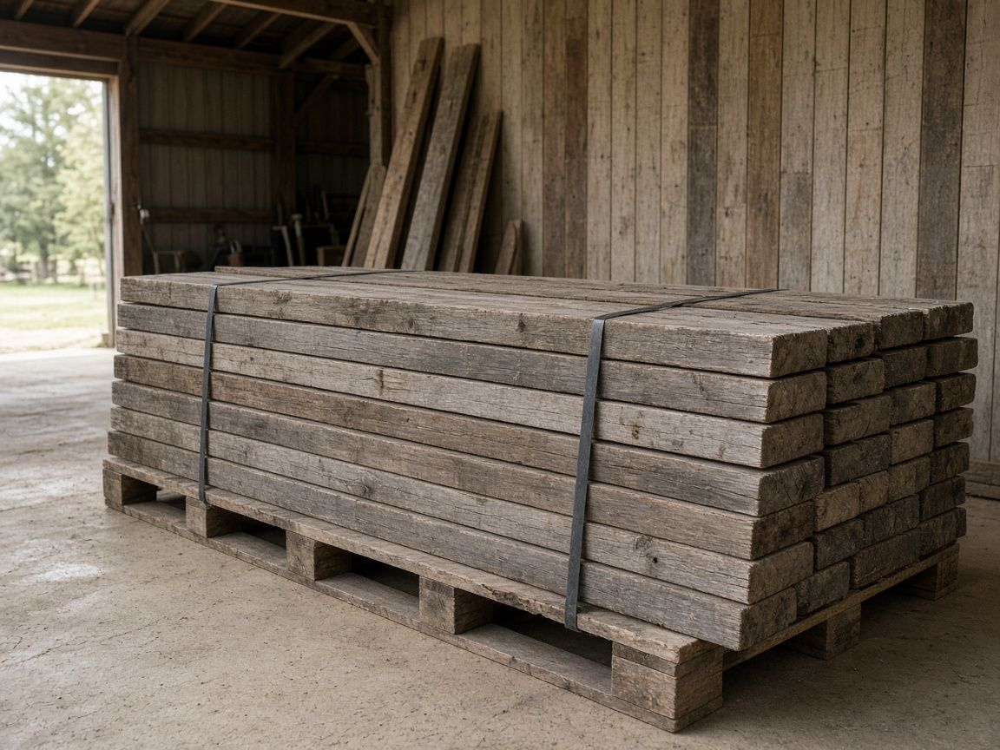
Long pieces for freightProduct photoEnds protected in the crateProduct photoA table that ships by freightDesign inspiration
The board and mantel photos are product photos of the wood. The table photo is design inspiration. It is not a photo of a crate or of a finished order. Your piece is made to order, and we send photos before it ships.
How is a hand-hewn beam or mantel packed for shipping?
A hand-hewn beam or mantel is crated or wrapped before it ships. The ends and the corners are protected so the face and the cut ends are covered for the trip. A table is packed the same way: the top and the base are covered, and the corners are protected. The exact crate or wrap for your piece is confirmed with the quote. We send photos of the piece before it ships. Every piece is handcrafted in Oklahoma, shipped in the continental US.
How do long beams and tables ship?
A long beam, a long mantel, or a table ships by LTL freight. LTL means less-than-truckload. The piece rides on a freight truck with other freight, because it is too long or too heavy for a parcel shipment. A smaller piece may ship by parcel when the size and the weight allow it. Which way your order ships is confirmed in the quote to your ZIP code. This page does not name a carrier, a transit time, or a fee. Pricing and delivery details are confirmed in each quote.
What should I expect on delivery day?
The carrier calls to schedule the delivery. Curbside delivery is common: the truck stops at the curb, and the piece comes off there. Liftgate service and residential delivery are options that may be quoted. Whether those are on your order is confirmed in the quote. Have help ready to move a heavy beam, mantel, or table. A solid beam is heavy, and a table is awkward to carry. Plan a clear path from the curb to a dry indoor spot before the truck arrives.
How do I inspect the crate before signing?
Look over the crate or the wrap before you sign the delivery receipt. Check the ends, the corners, and any tear in the wrap. If you see damage, note that visible damage on the receipt, take photos of the crate and of the piece, and contact us right away. Call 1-877-870-BEAM (2326) or email barndobeamco@agentmail.to.
How should I store a beam before install?
Store the beam indoors, flat, and dry. Keep it off a damp floor, and keep rain off it. Let it acclimate in the room where it will be installed before it goes up. Do not leave it outside. A table can wait the same way: indoors, level, and dry, until you set it in place. For finish care after it is up, see the reclaimed beam care and finish guide.
How do I get a price and a shipping quote?
Use the free quote form, call 1-877-870-BEAM (2326), or email barndobeamco@agentmail.to. Include your ZIP code, the piece, the size, and the finish (natural, medium, or dark). Say if you want a residential stop or a liftgate quoted. We reply within 2 business days with the wood price and the shipping to that ZIP. Pricing and delivery details are confirmed in each quote. Quotes are free. Every piece is handcrafted in Oklahoma, shipped in the continental US.
Shipping and delivery FAQ
How is a hand-hewn beam or mantel packed for shipping?
A hand-hewn beam or mantel is crated or wrapped before it ships. The ends and the corners are protected. A table is packed the same way. The exact crate or wrap, and the shipping price, are confirmed in the quote to your ZIP code. Every piece is handcrafted in Oklahoma, shipped in the continental US.
How do long beams and tables ship?
Long beams, long mantels, and tables ship by LTL freight. LTL means less-than-truckload: the piece rides on a freight truck because it is too long or too heavy for a parcel shipment. A smaller piece may ship by parcel when the size and the weight allow it. Which way it ships, and the price, are confirmed in the quote. This page does not name a carrier, a transit time, or a fee.
What should I expect on delivery day?
The carrier calls to schedule the delivery. Curbside delivery is common. Liftgate service and residential delivery are options that may be quoted, and those details are confirmed in your quote. Have help ready to move a heavy beam, mantel, or table from the curb.
How do I inspect the crate before signing?
Look over the crate or the wrap before you sign the delivery receipt. If you see damage, note that visible damage on the receipt, take photos of the crate and the piece, and contact us right away at 1-877-870-BEAM (2326) or barndobeamco@agentmail.to.
How do I get a price and a shipping quote?
Use the free quote form, call 1-877-870-BEAM (2326), or email barndobeamco@agentmail.to. Include the piece, the size, the finish, and your ZIP code. Say if a residential stop or a liftgate should be quoted. We reply within 2 business days with the wood price and shipping to that ZIP. Pricing and delivery details are confirmed in each quote. Quotes are free, and every piece is handcrafted in Oklahoma, shipped in the continental US.
Get a free quoteFree quote · Piece, finish, and ZIP · Handcrafted in Oklahoma
Character marks guide
Reading the Character Marks in a Hand-Hewn Beam
A hand-hewn beam keeps the marks of the tools and of the timber frame it came from. Scoring and hewing marks, mortise pockets, peg holes, old notches, nail holes, hardware stains, checks, and uneven patina are part of the wood. They are not damage from shipping, and they are not a defect in a decorative beam. Species and age vary by piece and are confirmed on the quote. No two pieces match. Ask for photos of your actual piece with your quote. Every piece is handcrafted in Oklahoma, shipped in the continental US.
Read the face for scoring and hewing marks: axe cuts that set the depth, then short scooped adze cuts or longer axe facets.
Look for a mortise pocket, a peg hole, or an old notch from the original timber frame. Not every face has one.
Expect nail holes, and dark stains where old iron sat. Leave them.
Leave checks that follow the grain. They are normal seasoning, not a defect.
Pick a finish knowing a lighter finish shows the marks more, and a dark finish deepens them.
Ask for photos of your actual piece with the free quote. Species and age are confirmed on that quote.
Faceted hewing marksProduct photoChecks and nail holesProduct photo
Both photos are product photos of hand-hewn reclaimed wood. They show the kind of tool marks, checks, and holes you read on a face. They are not a promise that your piece will look the same. Species and age vary by piece and are confirmed on the quote. Your piece is made to order, and we send photos before it ships.
What do hand-hewn axe and adze marks look like?
Scoring and hewing are how a log was squared by hand. Scoring marks are the first cuts. An axe chops a row of cuts into the side of the log to set how deep the waste wood will come off. On a face that was left as the tools finished it, those cuts can still read as a line of notches, or as short diagonal facets where the hewing strokes crossed them.
Hewing marks are the strokes that dressed the face to the line. An adze leaves short, scooped cuts. A broad axe leaves longer facets. The cuts overlap and change direction. The face stays uneven: high spots and low spots, not one flat plane. The edges wander. You will not see a repeating circular saw arc, or a set of straight parallel saw lines, running across a hewn face. The end of a beam is often sawn square when it is cut to length. That end cut is not the face. Read the long faces. The marks are there because the timber was shaped for a frame and the face was not planed smooth. For how a hewn face differs from a resawn face or a faux beam, see hand-hewn vs. resawn vs. faux beams.
What are mortise pockets, peg holes, and old notches?
A timber frame joins beams with cut wood. A mortise pocket is a rectangular hole cut into the face or the side, where the tenon of another timber sat. It can be shallow, or it can go through the beam. A peg hole is a smaller round or square hole where a wood peg locked that joint. After the frame comes apart, the peg is gone and the hole remains. An old notch is a step or a seat cut where a joist, a brace, or another beam landed. The cut is deliberate, and the edges are worn. It is not a break.
These marks mean the timber was part of a frame. A new board and a foam beam do not have them. Not every face shows a mortise. Some pieces show only tool marks and checks. Species and age vary by piece and are confirmed on the quote. Ask for a photo of the face if a pocket or a notch matters to you.
What do nail holes and old hardware stains mean?
Nail holes are the small holes left when nails or spikes were pulled. They can be round or square. Old iron often leaves a dark stain, gray or black, in a ring around the hole, or in a streak where a strap or a hinge sat against the wood. The stain is in the grain. It is not dirt you wipe off, and it is not a sign the beam was damaged in shipping.
Leave the holes and the stains. Filling them covers the history of the beam, and filler can pop out when the wood moves. Do not sand the face to make the holes disappear. Sanding removes the hand-hewn marks. For how to dust the face and leave the texture, see the reclaimed beam care and finish guide.
Are checks and cracks a defect?
No. A check is a split that follows the grain. It opens as the wood seasons and dries. A check, or a small crack along the grain, is normal in reclaimed wood. It does not mean a decorative beam is failing. Wood also moves a little when the humidity in a house changes, so a hairline check can open in the first heating season. Leave the checks. Do not fill them, and do not sand the face to hide them.
Patina is the uneven color already in the wood: gray, amber, and brown. It sits on the high spots and down in the tool marks. It is not one even coat of stain. A finish changes how much of that you see. It does not plane the marks off.
Natural (clear) stays closest to the weathered color. The scoring, the checks, and the color shifts stay easy to see.
Medium warms the wood. The marks still read, with less of the gray.
Dark deepens the grain. The facets and the holes still show, because the face is uneven, but the pale contrast is quieter.
Reclaimed wood will not match a paint chip exactly. Name the finish on the quote: natural, medium, or dark. For how each finish behaves, and for dusting after the beam is up, see the reclaimed beam care and finish guide.
Why don't two pieces match?
Each beam is a different timber. The tool marks, the pockets, the nail holes, the checks, and the color landed where that frame needed them. Species and age vary by piece and are confirmed on the quote. No two pieces match, and that is the character of hand-hewn reclaimed wood.
Ask for photos of your actual piece with your quote. Tell us the piece, the size, the finish (natural, medium, or dark), and your ZIP code, and say that you want photos of the face before it ships. For a one-of-a-kind mantel, you approve photos of that beam before it is cut. We send photos before a piece ships.
How do I get a price and a shipping quote?
Use the free quote form, call 1-877-870-BEAM (2326), or email barndobeamco@agentmail.to. Tell us the piece, the size, the finish (natural, medium, or dark), and your ZIP code. Say if you want photos of the face, including any mortise, nail holes, or checks, before it ships. We reply within 2 business days with the wood price and shipping to that ZIP. Species and age vary by piece and are confirmed on the quote. Quotes are free. Every piece is handcrafted in Oklahoma, shipped in the continental US.
Character marks FAQ
What do hand-hewn axe and adze marks look like?
Hand-hewn axe and adze marks are the cuts left when a log was squared by hand. Scoring marks are the first cuts: a row of axe cuts that set how deep the waste wood would come off. On the face they can read as a line of notches or as short diagonal facets. Hewing marks are the strokes that dressed the face. An adze leaves short scooped cuts. A broad axe leaves longer facets. The cuts overlap and change direction, so the face is uneven, with high spots and low spots, and the edges wander. A hewn face does not show a repeating circular saw arc or straight parallel saw lines. The end of a beam is often sawn square when it is cut to length. Read the long faces. The marks are there because the timber was shaped for a frame and the face was left as the tools finished it.
What are mortise pockets, peg holes, and old notches on a hand-hewn beam?
A mortise pocket is a rectangular hole cut into the beam where the tenon of another timber sat. A peg hole is a smaller round or square hole where a wood peg locked that joint. An old notch is a step or a seat cut where a joist, a brace, or another beam landed. These marks are from the original timber frame. The cut is deliberate, and the edges are worn. It is not a break. Not every face shows a pocket or a notch. Some pieces show only tool marks and checks. Species and age vary by piece and are confirmed on the quote. Ask for a photo of the face if a pocket or a notch matters to you.
What do nail holes and old hardware stains on a reclaimed beam mean?
Nail holes are the small holes left when nails or spikes were pulled. They can be round or square. Old iron often leaves a dark stain around the hole, or a streak where a strap or a hinge sat against the wood. The stain is in the grain. It is not dirt you wipe off, and it is not a sign the beam was damaged in shipping. Leave the holes and the stains. Filling them covers the history of the beam, and filler can pop out when the wood moves. For dusting without sanding the marks away, see the reclaimed beam care and finish guide.
Are checks and cracks in a hand-hewn beam a defect?
No. A check is a split that follows the grain. It opens as the wood seasons and dries, and a small crack along the grain is normal in reclaimed wood. It does not mean a decorative beam is failing. Wood also moves a little when indoor humidity changes, so a hairline check can open in the first heating season. Leave the checks. Do not fill them, and do not sand the face to hide them. A crack that runs across the beam, rather than along the grain, or a piece that arrives broken, is different. Send photos within 48 hours to barndobeamco@agentmail.to or call 1-877-870-BEAM (2326). For care, see the reclaimed beam care and finish guide.
How does finish change the character marks, and why don't two beams match?
Patina is the uneven color already in the wood: gray, amber, and brown, sitting on the high spots and down in the tool marks. A natural (clear) finish stays closest to that weathered color, so the scoring, the checks, and the color shifts stay easy to see. A medium finish warms the wood, and the marks still read. A dark finish deepens the grain. The facets and the holes still show, because the face is uneven, but the pale contrast is quieter. A finish does not plane the marks off. No two pieces match, because each beam is a different timber. Species and age vary by piece and are confirmed on the quote. Ask for photos of your actual piece with the free quote form. For how each finish behaves, see the reclaimed beam care and finish guide. Every piece is handcrafted in Oklahoma, shipped in the continental US.
Get a free quoteFree quote · Ask for photos of your piece · Handcrafted in Oklahoma
Measuring guide
How to Measure for a Hand-Hewn Beam, Mantel or Table
Measure the opening before you pick a length. For a mantel, write down the firebox width, the overall surround width, the mounting height, and the depth. For ceiling beams, write down the room length and width, the ceiling height, any slope, the spacing, and which way the beams run. For a range hood, measure the hood, not the cooktop. For a table, count the seats and the walkway you have to leave. Then send a wide shot, a close-up of the wall or ceiling, and a photo with a tape measure in the frame. Clearance to combustibles follows the fireplace or hood maker and local code. Do not guess that distance. Every piece is handcrafted in Oklahoma, shipped in the continental US.
Measure the fireplace: firebox width, surround width, mounting height, and depth.
Follow the fireplace maker and local code for clearance to combustibles. Do not guess a number of inches.
Measure the ceiling: room length and width, height, slope, spacing, and which way the beams run.
Measure the range hood, outside edge to outside edge, plus the hood depth and the wall above it.
Size the table from the seats and the walkway you have to leave.
Send a wide shot, a close-up, and a tape-measure photo with a free quote.
Fireplace opening to measureDesign inspirationCeiling span to measureDesign inspirationSeats and walkwayDesign inspirationHand-hewn mantel faceProduct photo
The room photos are design inspiration. The close-up is a product photo of the hand-hewn wood. They show the kind of opening, ceiling, and table you measure for. They are not a tape-measure diagram. Your piece is made to order, and we send photos before it ships.
How do I measure a fireplace for a hand-hewn mantel?
Write down four sizes, then check the clearance. The length of the mantel comes from the firebox. The other numbers tell us how the shelf sits on your wall.
Firebox width. Measure the clear opening, inside edge to inside edge, in inches. That is the opening where the fire sits. Do not use the stone face for this number. Add 6 to 12 inches of overhang on each side. Six inches looks tighter. Twelve inches looks heavier. A 48 inch firebox plus 12 inches on each side is 72 inches, which is a 6 ft mantel. Stock lengths are 6, 7, 8, 9, and 10 ft. If the math lands between those, round up to the next length, or ask for a custom length. For that length math, see how to size a reclaimed wood fireplace mantel.
Overall surround width. Measure the finished stone, brick, or tile face, outside edge to outside edge. You need this when the mantel has two legs, so the legs can land on the surround or just outside it, and not across the firebox. A mantel-only shelf does not need legs. The surround width still shows how wide the finished face is, which is useful if the shelf has to stop short of a window or a cabinet.
Mounting height. Measure from the finished hearth up to the spot where the bottom of the mantel will sit. If there is no hearth, measure from the finished floor. Also note the height of the firebox opening, from the hearth to the top of the opening. A stock mantel has an 8 inch tall face, so the top of the shelf sits 8 inches above the bottom line you measured.
Depth and projection. A stock mantel is 10 inches deep. Measure how far the surround already sticks out from the wall. The shelf has to clear that face. If the stone projects 2 inches, a 10 inch mantel projects about 8 inches past the stone. Say so on the quote if you need a different depth. A deeper shelf is a custom size.
Clearance to combustibles. A wood mantel is combustible. Follow the clearance in the fireplace maker's instructions, and follow local code. If they do not match, follow the stricter one. Do not guess a number of inches, and do not copy a gap from a photo. The height you want still has to sit outside that clearance. Barndo Beam Co. supplies the wood. The fireplace maker and local code set the clearance. Have the installer confirm the mantel sits outside that clearance before the wood goes up. For the mounts, see how to install a reclaimed beam mantel.
How do I measure a ceiling for decorative beams?
Measure the room in both directions, then say which way the beams run.
Room length and width. Measure wall to wall, in feet and inches. The direction the beams run is the beam length. The other direction is the width you space the beams across. A 12 by 16 ft room with beams running the long way needs 16 ft beams, spaced across the 12 ft side.
Ceiling height. Measure from the finished floor to the finished ceiling, at the spot where the beams will hang. On a ceiling about 8 to 9 feet high, an 8 by 8 is the stock solid size. On a ceiling about 9 to 12 feet high, 8 by 8 is usual. On a ceiling about 12 feet or taller, a 10 by 10 reads from the floor. Those faces are explained in how to size and space decorative ceiling beams. This page is the list of measurements to send.
Ceiling slope. If the ceiling is flat, say flat. If it slopes, measure the height at the low wall and the height at the ridge. Say whether the beams should follow the slope or sit on the flat part. A beam that follows a slope is not the same length as a beam on the flat, so both heights belong on the quote.
Spacing. On center means from the center of one beam to the center of the next. Decorative beams are usually about 3, 4, or 6 feet on center. About 3 feet suits a kitchen. About 4 feet is usual in a living room. About 6 feet keeps a tall ceiling more open. Divide the width you are spacing across by the number of beams. That result is the on-center spacing. The center of the first and last beam sits half of that spacing in from each side wall.
Which way the beams run. Run them the long way of the room and space them across the short way. Note which way the joists run, if you can see them or if your builder has said. Beams usually run across the joists so a mounting board can fasten into the joists. Note lights, a fan, and any soffit the beams have to clear. Stock lengths are 8, 12, 16, and 20 ft. If the span falls between those, round up or ask for a custom length.
How do I measure for a range hood beam?
Measure the hood, not the cooktop. The hood is usually wider than the burners, and the beam is sized to the hood.
Hood width. Measure outside edge to outside edge, in inches. Add overhang on each side so the beam reads wider than the metal. Six inches looks tighter. Twelve inches looks heavier. A 48 inch hood plus 12 inches on each side is 72 inches, which is a 6 ft beam. A 36 inch hood is shorter than the 6 ft stock minimum, so a 6 ft beam leaves about 18 inches of overhang on each side when it is centered. Stock lengths are 6, 7, 8, 9, and 10 ft. If cabinets flank the hood, measure the clear wall between the cabinet doors and stop the beam short of those doors so they still open. This overhang is for looks. It is not a heat clearance.
Hood depth and the wall above. Measure how far the hood projects from the wall. Measure the open wall above the hood, from the top of the hood to the ceiling or to the bottom of a soffit. A stock mantel has an 8 inch tall face and is 10 inches deep. On a wall with upper cabinets tight to the hood, an 8 inch face is usually enough. Tell us both numbers so the shelf does not crowd the cook or cover a filter, a light, or a control.
Clearance. A wood beam is combustible. Follow the hood maker's instructions and local code. If they do not match, follow the stricter one. Do not guess a number of inches, and do not copy a gap from a photo. Barndo Beam Co. supplies the wood. The hood maker and local code set the clearance. For the full hood guide, see the range hood beam guide.
How do I size a dining, coffee, or console table?
Measure the clear floor first. The table has to leave a walkway after the chairs are pulled out.
Dining. Count the seats. Allow about 24 inches of table length per person. A rectangular table is usually 36 inches wide, or 42 inches when you want room for platters down the center. Leave about 36 inches behind each chair so it can pull out and someone can walk past. Four seats fit a 5 or 6 ft table. Six seats fit a 6 or 7 ft table. Eight seats fit an 8 ft table. Ten seats fit a 10 ft table. Twelve seats fit a 12 ft table. Measure the dining area, keep 36 inches clear on the sides where chairs pull out, and what remains is the largest top that fits. If the room is tight, choose the shorter length. For bases and finishes, see how to size a custom reclaimed wood dining table.
Coffee. Measure from the floor to the top of the sofa seat. A coffee table is usually about 16 to 18 inches tall, level with that seat or an inch or two lower. Measure the sofa length. Make the table about one-half to two-thirds of that length, and run the long side parallel to the sofa. Leave 12 to 18 inches between the table and the sofa, and the same on any side people walk past. Twelve inches is a tight pass. Eighteen inches is an easy one.
Console. Measure the hall, or the sofa. A stock beam console is 32 inches tall. An entry console is often 4 to 6 ft, long enough for a lamp and short enough for the hall. Measure the hall width so the table does not pinch the walkway. A sofa-back console sits near the sofa back, about 28 to 32 inches tall, and runs about the length of the sofa or a few inches shorter so the ends do not stick past the arms. For those sizes, see how to size a custom reclaimed wood coffee or console table.
What photos should I send with a quote request?
Three photos are enough. They do not have to be styled, and they do not have to match a catalog. Daylight is enough.
A wide shot of the whole wall, fireplace, ceiling, or room. Include the floor and the ceiling in the same frame when you can, so the height is visible.
A close-up of the wall or the ceiling where the piece will mount. For a mantel, show the stone, brick, or tile around the opening. For a ceiling, show the drywall, or the joists if they are open. For a hood, show the hood and the wall above it. For a table, show the floor, including the chairs or the sofa.
A photo with a tape measure in the frame. Extend the tape across the firebox, the hood, the ceiling span, or the clear floor, and keep the numbers readable. One photo can do this if the tape and the opening are both in frame.
The quote form opens an email. Attach the photos there, or email them to barndobeamco@agentmail.to with the same measurements. Name the piece and the finish: natural, medium, or dark. If a mortise, a check, or a certain face matters, say that you want photos of the actual piece. We send photos before a piece ships.
How do I send measurements for a free quote?
Use the free quote form, call 1-877-870-BEAM (2326), or email barndobeamco@agentmail.to. Put the measurements in the project details. For a mantel: firebox width, surround width, mounting height, and depth. For a ceiling: room length, width, height, slope, spacing, and which way the beams run. For a range hood: hood width, hood depth, and the wall above the hood. For a table: seats and the walkway you measured. Add the finish (natural, medium, or dark) and your ZIP code. We reply within 2 business days with the wood price and shipping to that ZIP. Quotes are free. Every piece is handcrafted in Oklahoma, shipped in the continental US.
Measuring FAQ
How do I measure a fireplace for a hand-hewn mantel?
Measure the firebox width, the overall surround width, the mounting height, and the depth. Firebox width is the clear opening, inside edge to inside edge, in inches. Overall surround width is the finished stone, brick, or tile face, outside edge to outside edge. You need the surround width if you want a mantel plus two legs, so the legs land on the surround or just outside it. Mounting height is from the finished hearth, or from the finished floor if there is no hearth, up to where the bottom of the mantel will sit. Also note the height of the firebox opening. A stock mantel has an 8 inch tall face and is 10 inches deep. Measure how far the surround already projects from the wall, and how far you want the shelf to project past that face. Clearance to combustibles: a wood mantel is combustible. Follow the fireplace maker's instructions and local code. If they do not match, follow the stricter one. Do not guess a number of inches, and do not copy a gap from a photo. Barndo Beam Co. supplies the wood. The fireplace maker and local code set the clearance. For the length, add 6 to 12 inches of overhang on each side of the firebox, then match a stock length of 6, 7, 8, 9, or 10 ft. See how to size a reclaimed wood fireplace mantel.
How do I measure a ceiling for decorative beams?
Measure the room length and the room width, wall to wall, in feet and inches. The direction the beams run is the beam length. The other direction is the width you space them across. Measure the ceiling height from the finished floor to the finished ceiling. If the ceiling slopes, measure the height at the low wall and the height at the ridge, and say whether the beams should follow the slope or sit on the flat part. Spacing is on center: from the center of one beam to the center of the next. Decorative beams are usually about 3, 4, or 6 feet on center. About 3 feet suits a kitchen. About 4 feet is usual in a living room. About 6 feet keeps a tall ceiling more open. Run the beams the long way and space them across the short way. Note which way the joists run. Beams usually run across the joists so a mounting board can fasten into them. Note lights, a fan, and any soffit the beams have to clear. Stock lengths are 8, 12, 16, and 20 ft. See how to size and space decorative ceiling beams.
How do I measure for a range hood beam?
Measure the range hood, outside edge to outside edge, not the cooktop. Add overhang on each side so the beam reads wider than the hood. Six inches looks tighter. Twelve inches looks heavier. A 48 inch hood plus 12 inches on each side is 72 inches, which is a 6 ft beam. A 36 inch hood is shorter than the 6 ft stock minimum, so a 6 ft beam leaves about 18 inches of overhang on each side when it is centered. If cabinets flank the hood, measure the clear wall between the cabinet doors and stop the beam short of those doors. Also measure the hood depth, and the open wall above the hood, from the top of the hood to the ceiling or to the bottom of a soffit. A stock mantel has an 8 inch tall face and is 10 inches deep. This overhang is for looks. It is not a heat clearance. A wood beam is combustible. Follow the hood maker's instructions and local code. If they do not match, follow the stricter one. Do not guess a number of inches, and do not copy a gap from a photo. See the range hood beam guide.
How do I size a dining, coffee, or console table?
Size the table from the seats and the clear floor. For a dining table, allow about 24 inches of length per person. A rectangular table is usually 36 inches or 42 inches wide. Leave about 36 inches of walkway behind each chair so it can pull out. Four seats fit a 5 or 6 ft table. Six seats fit a 6 or 7 ft table. Eight seats fit an 8 ft table. Ten seats fit a 10 ft table. Twelve seats fit a 12 ft table. Measure the dining area, keep that walkway, and what remains is the largest top that fits. For a coffee table, use about 16 to 18 inches of height, level with the sofa seat or an inch or two lower. Make the length about one-half to two-thirds of the sofa, and leave 12 to 18 inches of walkway between the table and the sofa and on any side people walk past. For a console, a stock beam console is 32 inches tall. An entry console is often 4 to 6 ft long. A sofa-back console sits near the sofa back, about 28 to 32 inches tall, and runs about the length of the sofa or a few inches shorter. See how to size a custom reclaimed wood dining table and how to size a custom reclaimed wood coffee or console table.
What photos should I send with a quote request?
Send three photos with the measurements. A wide shot shows the whole wall, fireplace, ceiling, or room. A close-up shows the wall or the ceiling where the piece will mount: the stone, brick, or tile, the drywall, or the joists if the ceiling is open. A third photo has a tape measure in the frame, extended across the firebox, the hood, the ceiling span, or the clear floor, with the numbers readable. Daylight is enough. The quote form opens an email. Attach the photos there, or send them to barndobeamco@agentmail.to with the measurements, the piece, the finish (natural, medium, or dark), and your ZIP code.
How do I send measurements for a free quote?
Use the free quote form, call 1-877-870-BEAM (2326), or email barndobeamco@agentmail.to. Include the measurements, the piece, the finish (natural, medium, or dark), and your ZIP code. We reply within 2 business days with the wood price and shipping to that ZIP. Quotes are free. Every piece is handcrafted in Oklahoma, shipped in the continental US.
Get a free quoteFree quote · Measurements, finish, and ZIP · Handcrafted in Oklahoma
Indoor wood guide
Is Reclaimed Wood Safe Indoors? Moisture, Bugs and Finish
Old reclaimed wood goes indoors when it is dry, the insect holes are old and quiet, and any paint is tested before someone sands it. Acclimate the beam in the room for a few days before it goes up. A clear or natural finish shows the wood and helps a spill bead. It does not waterproof the beam, and it does not make it heatproof. Keep the wood off standing water and off a direct blast of heat. This page is general guidance. Ask us about your piece when you request a quote. Every piece is handcrafted in Oklahoma, shipped in the continental US.
Check that the wood is dry for indoors, then let it sit in the room for a few days before install.
Read the holes. Old, dark, quiet holes are different from fresh dust and new pale holes.
Ask about drying and any insect treatment. Ask us the same thing on the quote.
Test any painted wood for lead with an EPA-recognized kit before you sand it.
Know what a clear or natural finish does, and what it does not do.
Keep the beam off moisture and direct heat, then send a free quote.
Checks and old holesProduct photoFace a clear finish showsProduct photoA beam used indoorsDesign inspirationOut of direct rainDesign inspiration
The close-ups are product photos of hand-hewn reclaimed wood. They show checks, nail holes, and tool marks. They are not a photo of insects, and they are not a moisture reading. The room photos are design inspiration. Your piece is made to order, and we send photos before it ships.
How dry should reclaimed wood be before it goes indoors?
Old wood for a beam, a mantel, or a table should be dry to the room it will live in. Wet wood from a barn floor, a yard, or a recent rain does not belong on an indoor wall yet. In a heated home, indoor wood is often somewhere around 6 to 12 percent moisture content. The number moves with the season and the climate. A moisture meter is the practical check. The beam should read close to other wood already in the house, not soaking. This page does not set one moisture number for every climate. Ask us about drying when you request a quote.
Before you install it, acclimate the beam in the room. Set it flat, indoors, and off a damp floor, and leave it a few days. A few days lets the surface settle to that room. A thick solid beam equalizes more slowly than a thin board. If the piece feels damp, or the house is very dry from heat, give it longer than a few days. The same storage note is in how reclaimed beams, mantels, and tables ship: store the beam indoors, flat, and dry, and let it acclimate before it goes up. Every piece is handcrafted in Oklahoma, shipped in the continental US.
How can I tell active insects from old inactive holes?
Old reclaimed wood often has holes. Most of them are not a live problem. Read what the hole looks like, and look for fresh dust.
An old, inactive hole is part of the history of the timber. The hole is dark inside. The edge is worn, the same age as the rest of the face. No fine powder appears under the beam after you wipe the floor. A nail hole, a peg hole, and a mortise pocket are cuts from nails or from the timber frame. They are not insect tunnels. For those marks, see how to read the character marks in a hand-hewn beam.
Active insects leave a different trail. Fine, fresh sawdust or small pellets keep showing up under the beam after you clean them away. New holes look pale inside, not dark and worn. You may see a live insect. That fresh dust is the sign to stop. Do not install that piece in a living space until someone who identifies wood insects has looked at it. Send photos when you request a quote and ask us what we know about that piece.
What should I ask about drying and insect treatment?
Ask before the wood comes indoors. A seller should be able to say whether the timber was dried for indoor use, how it was stored, and whether anything was done about insects. Old holes by themselves are not a drying record and they are not a treatment record. If those answers are missing, treat that as a reason to look closer.
Ask us the same questions when you request a quote. Tell us the piece and your ZIP code, and ask about drying and about any holes you want to see in photos. We will tell you what we know about that piece. Every piece is handcrafted in Oklahoma, shipped in the continental US.
Should I test old paint on reclaimed wood for lead?
Yes, if the wood still has paint and you plan to sand, scrape, or strip it. Paint on buildings from before 1978 can contain lead, and the age of a reclaimed beam is often unknown. Test any painted wood with an EPA-recognized lead test kit before you disturb the paint. The EPA lists recognized kits on that page. If the kit finds lead, do not sand that paint in the house. Follow the EPA's lead-safe work practices, or have someone who does that work handle the paint.
Beams, mantels, and tables ordered here are finished natural (clear), medium, or dark. That finish is not a coat of old house paint. If a face still shows old paint, ask us when you request a quote, and test it before anyone sands it. This page does not claim a piece is lead-free.
What does a clear or natural finish do?
A natural (clear) finish is a thin clear coat with almost no shine. The weathered color stays close to the wood. The checks, the tool marks, and the holes still show. A spill beads instead of soaking in at once. That is the same clear matte look in the reclaimed beam care and finish guide. Medium warms the wood. Dark deepens the grain. A finish does not plane the marks off.
A clear finish is not paint, and it is not a waterproof skin. Standing water still hurts the wood if you leave it there. The finish does not stop a check from moving when indoor humidity changes, and it does not change the clearance a wood mantel needs from a fire. Name natural, medium, or dark on the quote. Reclaimed wood will not match another finish exactly.
How do I keep a reclaimed beam away from moisture and direct heat?
Use the beam indoors, or on a covered porch where the roof keeps rain off it. Do not set it where rain, a sprinkler, or standing water hits the wood. Keep it off a damp floor and off a known leak. Direct weather swells the beam, opens checks, and wears a finish off. Indoors, wipe a spill and dry the spot. Do not soak the wood.
Keep the beam off a direct blast of heat. A floor register aimed at the wood, a radiator tight against it, or a lamp baking one face dries that face and can open checks. A wood mantel is combustible. Clearance to the fire follows the fireplace maker and local code. Do not guess a number of inches, and do not copy a gap from a photo. A clear finish does not make the beam heatproof. For mantel clearance, see the reclaimed beam care and finish guide.
How do I ask about a piece and get a free quote?
Use the free quote form, call 1-877-870-BEAM (2326), or email barndobeamco@agentmail.to. Tell us the piece, the size, the finish (natural, medium, or dark), and your ZIP code. Ask about drying, about any holes you want to see, and about old paint if the face has it. We reply within 2 business days with the wood price and shipping to that ZIP. Quotes are free. Every piece is handcrafted in Oklahoma, shipped in the continental US.
Reclaimed wood indoors FAQ
How dry should reclaimed wood be before it goes indoors?
Old wood for a beam, a mantel, or a table should be dry to the room it will live in. Wet wood from a barn floor, a yard, or a recent rain does not belong on an indoor wall yet. In a heated home, indoor wood is often somewhere around 6 to 12 percent moisture content. The number moves with the season and the climate. A moisture meter is the practical check. The beam should read close to other wood already in the house, not soaking. This page does not set one moisture number for every climate. Ask us about drying when you request a quote. Before you install it, acclimate the beam in the room. Set it flat, indoors, and off a damp floor, and leave it a few days. A few days lets the surface settle to that room. A thick solid beam equalizes more slowly than a thin board. If the piece feels damp, or the house is very dry from heat, give it longer than a few days. Store the beam indoors, flat, and dry, and let it acclimate before it goes up. See how reclaimed beams, mantels, and tables ship. Every piece is handcrafted in Oklahoma, shipped in the continental US.
How can I tell active insects from old inactive holes in a beam?
Old reclaimed wood often has holes. Most of them are not a live problem. An old, inactive hole is dark inside, and the edge is worn, the same age as the rest of the face. No fine powder appears under the beam after you wipe the floor. A nail hole, a peg hole, and a mortise pocket are cuts from nails or from the timber frame. They are not insect tunnels. See how to read the character marks in a hand-hewn beam. Active insects leave a different trail. Fine, fresh sawdust or small pellets keep showing up under the beam after you clean them away. New holes look pale inside, not dark and worn. You may see a live insect. Do not install that piece in a living space until someone who identifies wood insects has looked at it. Send photos when you request a quote and ask us what we know about that piece. A check is not an insect gallery. A check is a split that follows the grain as the wood dries. Leave it. See the reclaimed beam care and finish guide.
What should I ask about drying and insect treatment?
Ask whether the timber was dried for indoor use, how it was stored, and whether anything was done about insects. Old holes by themselves are not a drying record and they are not a treatment record. If those answers are missing, look closer. Ask us the same questions when you request a quote. Tell us the piece and your ZIP code, and ask about drying and about any holes you want to see in photos. We will tell you what we know about that piece. Use the free quote form, call 1-877-870-BEAM (2326), or email barndobeamco@agentmail.to. Every piece is handcrafted in Oklahoma, shipped in the continental US.
Should I test old paint on reclaimed wood for lead?
Yes, if the wood still has paint and you plan to sand, scrape, or strip it. Paint on buildings from before 1978 can contain lead, and the age of a reclaimed beam is often unknown. Test any painted wood with an EPA-recognized lead test kit before you disturb the paint. The EPA lists recognized kits on that page. If the kit finds lead, do not sand that paint in the house. Follow the EPA's lead-safe work practices, or have someone who does that work handle the paint. Beams, mantels, and tables ordered from Barndo Beam Co. are finished natural (clear), medium, or dark. That finish is not a coat of old house paint. If a face still shows old paint, ask us when you request a quote, and test it before anyone sands it. This page does not claim a piece is lead-free.
What does a clear or natural finish do on a reclaimed beam?
A natural (clear) finish is a thin clear coat with almost no shine. The weathered color stays close to the wood. The checks, the tool marks, and the holes still show. A spill beads instead of soaking in at once. That is the clear matte look in the reclaimed beam care and finish guide. Medium warms the wood. Dark deepens the grain. A finish does not plane the marks off. A clear finish is not paint, and it is not a waterproof skin. Standing water still hurts the wood if you leave it there. The finish does not stop a check from moving when indoor humidity changes, and it does not change the clearance a wood mantel needs from a fire. Name natural, medium, or dark on the free quote form. Reclaimed wood will not match another finish exactly.
How do I keep a reclaimed beam away from moisture and direct heat?
Use the beam indoors, or on a covered porch where the roof keeps rain off it. Do not set it where rain, a sprinkler, or standing water hits the wood. Keep it off a damp floor and off a known leak. Direct weather swells the beam, opens checks, and wears a finish off. Indoors, wipe a spill and dry the spot. Do not soak the wood. Keep the beam off a direct blast of heat. A floor register aimed at the wood, a radiator tight against it, or a lamp baking one face dries that face and can open checks. A wood mantel is combustible. Clearance to the fire follows the fireplace maker and local code. Do not guess a number of inches, and do not copy a gap from a photo. A clear finish does not make the beam heatproof. See the reclaimed beam care and finish guide. To ask about drying, holes, or old paint on your piece, use the free quote form, call 1-877-870-BEAM (2326), or email barndobeamco@agentmail.to. Tell us the piece, the size, the finish (natural, medium, or dark), and your ZIP code. We reply within 2 business days with the wood price and shipping to that ZIP. Quotes are free. Every piece is handcrafted in Oklahoma, shipped in the continental US.
Get a free quoteFree quote · Ask about drying and the face · Handcrafted in Oklahoma
Finish matching guide
How to Match a Reclaimed Beam to Your Floors, Cabinets and Trim
Beams, mantels, and tables come in three finishes: natural (clear), medium, or dark. Hold a sample of the floor, a cabinet door, or a piece of trim next to those three and pick the closest one. A beam can blend with the wood already in the room, or it can contrast with it. Reclaimed wood will not match another finish exactly. The adze marks and the color shifts are part of the wood. Every piece is handcrafted in Oklahoma, shipped in the continental US.
Decide whether the beam should blend with the floors or contrast with them.
Match painted cabinets and stained cabinets differently. Painted cabinets are a flat color. Stained cabinets are already wood.
Set the beam next to the trim and the doors you already have, and use the same finish on every new piece.
Look at the finish in daylight and with the bulbs you actually use. Warm light and cool light do not read the same.
Order ceiling beams, a mantel, and a table in one finish when they share a room.
Send photos of the room with the quote, then ask for the wood price and shipping to your ZIP code.
Face to set next to a floorProduct photoWeathered color, natural finishProduct photoBeams beside cabinetsDesign inspirationA mantel next to the floorDesign inspiration
The close-ups are product photos of hand-hewn reclaimed wood. The room photos are design inspiration. They show how a beam can sit with cabinets and a fireplace. They are not a color match for your floors, cabinets, or trim. Your piece is made to order, and we send photos before it ships.
How do I pick a beam tone next to wood floors, contrast or blend?
Blend when you want the beam in the same family as the floor. A pale or weathered floor sits closer to a natural (clear) finish. A warm mid-tone floor sits closer to medium. A deep brown floor sits closer to dark. Hold a floor sample, or a photo of the floor in daylight, next to those three and pick the closest one.
Contrast when you want the beam to read as the feature. A dark finish against a lighter floor does that. A natural finish against a darker floor does that too. The beam does not have to be the same board as the floor. Reclaimed wood will not match a floor stain exactly, and the adze marks and color shifts are part of the wood. Name natural, medium, or dark on the quote.
How do I match a beam to painted cabinets versus stained cabinets?
Painted cabinets are a flat color: white, cream, gray, black, or another paint. The beam is the wood in that kitchen. Natural or medium keeps the weathered face easy to see against the paint. Dark sits closer to black paint and to black hardware. The beam will not match the paint chip. Pick the finish that looks right next to the paint.
Stained cabinets are already wood. Pick the closest of the three finishes. Do not look for a new stain mixed to the cabinet. A warm mid-tone stained cabinet sits closer to medium. A very dark stained cabinet sits closer to dark. A pale or grayed stained cabinet sits closer to natural (clear). They will not match exactly. The checks and the tool marks still show. For what each finish does, see the reclaimed beam care and finish guide.
How do I mix a beam with the trim and doors I already have?
Painted trim and painted doors can stay paint. The beam does not have to copy them. Use the finish you already chose for the floors and the cabinets, and let the painted casing read as paint.
Stained trim and stained doors are a different piece of wood, and often a different stain, than the beam. Pick the closest of natural, medium, or dark. Natural stays closer to the weathered color. Medium warms the wood. Dark deepens the grain. If the doors are dark and the trim is painted a light color, decide which one the beam should sit with, then name that finish.
Use that same finish on every beam, mantel, and table in the room. A second finish on the new pieces is what makes the wood look unmatched.
How does lighting change how a finish reads?
Look at the beam in the light the room actually uses. Daylight from a window shows the weathered color, the checks, and the tool marks most clearly. A natural (clear) finish stays closest to that color.
Warm bulbs, the yellow household bulbs, pull the wood warmer. A medium finish looks more amber. A natural finish can look warmer than it did in daylight. Cool bulbs, the bluish ones, pull the same wood grayer. A dark finish can look flatter. A natural finish can look more gray than it did under warm light.
Check the corner in daylight and again with the lights on before you name a finish. We send photos of your piece before it ships. Those photos are a start. Your room's light is the other half. Tell us whether the room is mostly daylight, warm bulbs, or cool bulbs when you request a quote.
How do I use several beams, a mantel, and a table together in one room?
Order them in the same finish: natural, medium, or dark. Ceiling beams, a fireplace mantel, and a dining, coffee, or console table can share that one finish. No two pieces match exactly, because each beam is a different timber. Say on the quote that they will sit in one room, and name the finish once.
Why does sending photos of the room with a quote request help?
A photo shows the floors, the cabinets, the trim, and the light together. A color word does not. Send a wide shot of the room in the light you live with. Send a closer shot of the floor, and of a cabinet door or a piece of trim. Daylight is enough. If you can, send the same corner with the lights on.
The quote form opens an email. Attach the photos there, or send them to barndobeamco@agentmail.to with the piece, the finish you are leaning toward (natural, medium, or dark), and your ZIP code. We can tell you which of the three finishes sits closest. Reclaimed wood still will not match the floor or the cabinet exactly. For what else to include in the photos, see how to measure for a hand-hewn beam, mantel, or table.
How do I get a price and a shipping quote?
Use the free quote form, call 1-877-870-BEAM (2326), or email barndobeamco@agentmail.to. Include the piece, the size, the finish (natural, medium, or dark), and your ZIP code. Say if a mantel, ceiling beams, and a table should share that finish. Attach the room photos. We reply within 2 business days with the wood price and shipping to that ZIP. Quotes are free. Every piece is handcrafted in Oklahoma, shipped in the continental US.
Finish matching FAQ
How do I pick a beam tone next to wood floors, contrast or blend?
Blend when you want the beam in the same family as the floor. A pale or weathered floor sits closer to a natural (clear) finish. A warm mid-tone floor sits closer to medium. A deep brown floor sits closer to dark. Contrast when you want the beam to read as the feature. A dark finish against a lighter floor does that. A natural finish against a darker floor does that too. Hold a sample of the floor next to those three. The beam does not have to be the same board as the floor. Reclaimed wood will not match a floor stain exactly, and the adze marks and color shifts are part of the wood. Name natural, medium, or dark on the free quote.
How do I match a beam to painted cabinets versus stained cabinets?
Painted cabinets are a flat color, so the beam is the wood in that kitchen. Natural or medium keeps the weathered face easy to see against the paint. Dark sits closer to black paint and to black hardware. The beam will not match a paint chip. Stained cabinets are already wood. Pick the closest of the three finishes. A warm mid-tone stained cabinet sits closer to medium. A very dark stained cabinet sits closer to dark. A pale or grayed stained cabinet sits closer to natural (clear). They will not match exactly. The checks and the tool marks still show. For what each finish does, see the reclaimed beam care and finish guide.
How does lighting change how a finish reads?
Look at the beam in the light the room actually uses. Daylight from a window shows the weathered color, the checks, and the tool marks most clearly. A natural (clear) finish stays closest to that color. Warm bulbs, the yellow household bulbs, pull the wood warmer. A medium finish looks more amber. A natural finish can look warmer than it did in daylight. Cool bulbs, the bluish ones, pull the same wood grayer. A dark finish can look flatter. A natural finish can look more gray than it did under warm light. Check the corner in daylight and again with the lights on before you name a finish. Tell us whether the room is mostly daylight, warm bulbs, or cool bulbs when you request a quote.
How do I use several beams, a mantel, and a table together in one room?
Order them in the same finish: natural, medium, or dark. Ceiling beams, a fireplace mantel, and a dining, coffee, or console table can share that one finish. No two pieces match exactly, because each beam is a different timber. Say on the quote that they will sit in one room, and name the finish once. The match that matters among the new pieces is that they share a finish, even when the floors and the cabinets are a different wood. See how to size and space decorative ceiling beams and how to size a reclaimed wood fireplace mantel. Every piece is handcrafted in Oklahoma, shipped in the continental US.
How do I get a price and a shipping quote for a matched finish?
Use the free quote form, call 1-877-870-BEAM (2326), or email barndobeamco@agentmail.to. Include the piece, the size, the finish (natural, medium, or dark), and your ZIP code. Say if a mantel, ceiling beams, and a table should share that finish. Attach photos of the room: a wide shot in the light you live with, and a closer shot of the floor and of a cabinet door or a piece of trim. We reply within 2 business days with the wood price and shipping to that ZIP. Quotes are free. Every piece is handcrafted in Oklahoma, shipped in the continental US.
Get a free quoteFree quote · Name the finish and your ZIP · Handcrafted in Oklahoma, shipped in the continental US
Delivery receiving guide
Receiving Your Reclaimed Beam Delivery: Inspecting, Unpacking and Storing Before Install
When the beam, mantel, or table arrives, look at the packaging and the piece before you sign. Photograph anything that looks new, and write it on the delivery receipt. Unpack with the blade pointed away from the wood, and carry a solid beam with two or more people. Then set it indoors, flat, off the concrete, and away from heat, and let it sit in the room before it goes up. A check along the grain is old wood. A fresh pale gouge is not. How it ships, how long it takes, a liftgate, and what to do about damage are things to ask about on your free quote. Every piece is handcrafted in Oklahoma, shipped in the continental US.
Inspect the crate or wrap, and the piece if you can see it, before you sign.
Photograph any damage, and note it on the delivery receipt.
Unpack with the blade facing away from the finish. Lift the piece. Do not slide it.
Carry a solid beam with two or more people. Do not drag it.
Store it indoors, flat, up off concrete, and away from heat. Let it acclimate in the room.
Ask about freight, timing, a liftgate, or a damaged piece on your free quote.
Old checks and nail holesProduct photoFinished face, unpack carefullyProduct photoLong pieces, stored flat and up off the floorProduct photo
These are product photos of the wood. They are not a photo of your crate, and they are not a delivery. Your piece is made to order, and we send photos before it ships. Compare the piece you receive with those photos.
What should I check on the packaging and the piece before I sign?
Look over the crate or the wrap before you sign the delivery receipt. Walk the length of it. Check the ends, the corners, and any tear, crush, or wet spot in the wrap. A crushed corner on the crate is worth a photo even if you have not opened it yet.
If you can see the piece, look at the face and both ends. Compare it with the photos we sent before it shipped. Those photos are the record of the wood as it left the shop. If you see damage, photograph the packaging and the piece, in daylight if you can, close enough that the mark is clear. Write that visible damage on the delivery receipt before you sign. Then call 1-877-870-BEAM (2326) or email barndobeamco@agentmail.to and ask what to do next. How the freight is handled, how long delivery takes, whether a liftgate is on the order, and the next step if something is damaged are confirmed on your quote. Ask about them on your free quote. This page does not set them. For how the piece is crated, see how reclaimed beams, mantels, and tables ship.
How do I unpack a reclaimed beam without scratching the finish?
Set the crate or the wrap on a clean pad before you open it. Bare concrete and gravel both scratch a finished face. A natural, medium, or dark finish is a thin coat. A box cutter dragged along the wood will score it.
Cut tape and plastic with the blade facing away from the wood, or use scissors and keep the points off the face. Peel the padding off. If a board is screwed or nailed on, back the fastener out. Do not lever a pry bar against the finished face or the cut end. Lift the piece out of the crate. Do not slide the finished face across the crate boards or across the floor. Leave the corner pads on until the beam is in the room where it will sit, then take them off by hand. The same care fits a mantel and a table top. The top is the face people will see.
How do I carry a heavy solid reclaimed beam?
Use two or more people. A solid hand-hewn beam is real timber, and a longer beam weighs more than a shorter one. There is no single weight for every piece. Ask for the weight of your beam on the free quote if you need it to plan the carry, and include your ZIP code.
Put a person near each end. On a very long beam, put a third person in the middle. Bend at the knees, keep the beam close to your body, and walk. Do not twist while you are holding it. Do not drag it. Dragging scratches the finish and can chip an end. Do not carry a long solid beam on one shoulder by yourself. Clear the path from where the truck leaves the piece to the indoor spot before you lift. A beam longer than a doorway has to come in at an angle. Plan that turn before the beam is in the air. A hollow box beam is lighter than a solid beam of the same outside size, but a long one is still awkward, so use two people for that too. A table is awkward in the same way: two people, and do not set the finished top on gravel.
Where should I store a reclaimed beam until it is installed?
Store it indoors, flat, and dry. The room where it will be installed is the best spot, so it can acclimate there. Another dry indoor room is fine until you can move it. Support it along its length on dry wood stickers, or on the clean boards from the crate, so the wood is up off the floor. Do not lay the face on bare concrete. Concrete stays cooler and damper than the room, and it can stain or mark the face that sits on it. A garage slab is still concrete. If that is the only indoor floor you have, keep stickers under the beam and keep the space dry.
Keep it away from heat. A floor register aimed at the wood, a radiator tight against it, a fireplace, a space heater, or a window that bakes one face will dry that side and can open checks. Do not stand a long beam on end. It can fall. Do not leave it outside, in the rain, or where a sprinkler hits it. Let it acclimate in the install room for a few days before it goes up. A few days lets the surface settle to that room. A thick solid beam equalizes more slowly than a hollow box beam or a thin board. If the piece feels damp, or the house is very dry from heat, give it longer than a few days. This page does not set one number of days for every house. For moisture and heat after the beam is in the house, see is reclaimed wood safe indoors.
How do I tell a normal check or old mark from shipping damage?
Old character was on the beam before it was packed. A check is a split that follows the grain. A nail hole, a dark iron stain, an adze or axe facet, a mortise pocket, a peg hole, and uneven gray, amber, and brown patina are part of reclaimed wood. The edges are worn. The color sits down in the grain. They are not a defect in a decorative beam, and they are not damage from the trip. For how to read those marks, see how to read the character marks in a hand-hewn beam.
Shipping damage looks new. A fresh gouge or scrape is pale inside, with sharp edges and torn finish. A crushed corner, a break, a crack that runs across the grain rather than along it, or a dent that lines up with a crushed part of the crate is damage. The wood inside a new scrape looks lighter than the worn face around it. Compare the piece with the photos sent before it shipped. If a mark is in those photos, it left with the beam. If you are not sure, photograph it and ask. Do not sand the face, and do not fill the mark, before you ask. Sanding removes the hand-hewn marks. For dusting after the beam is up, see the reclaimed beam care and finish guide.
How do I ask about freight, a liftgate, or a damaged delivery?
Ask about the freight method, the delivery timing, a liftgate, or what to do if the piece arrives damaged on your free quote. Use the free quote form, call 1-877-870-BEAM (2326), or email barndobeamco@agentmail.to. Include the piece, the size, the finish (natural, medium, or dark), and your ZIP code. If the piece is already there, send the photos of the packaging and the piece and ask what to do next. This page does not name a carrier, a transit time, a fee, or a claims process. We reply within 2 business days with the wood price and shipping to that ZIP. Quotes are free. Every piece is handcrafted in Oklahoma, shipped in the continental US.
Delivery receiving FAQ
What should I check on the packaging and the piece before I sign?
Look over the crate or the wrap before you sign the delivery receipt. Check the ends, the corners, and any tear in the wrap. If you can see the piece, look at the face and the ends too, and compare it with the photos sent before it shipped. If you see damage, photograph the packaging and the piece, write that damage on the receipt before you sign, then call 1-877-870-BEAM (2326) or email barndobeamco@agentmail.to and ask what to do next. Freight method, delivery timing, a liftgate, and the next step if something is damaged are confirmed on your free quote. This page does not set those.
How do I unpack a reclaimed beam without scratching the finish?
Set the crate or the wrap on a clean pad, not on bare concrete and not on gravel. Cut tape and plastic with the blade facing away from the wood. A box cutter dragged along the face will score a natural, medium, or dark finish. Peel the padding off. If a board is fastened on, back the fastener out. Do not lever a pry bar against the finished face. Lift the piece out. Do not slide the finished face across the crate or the floor. Leave the corner pads on until the beam is in the room where it will sit.
How do I carry a heavy solid reclaimed beam?
Use two or more people. A long solid beam needs a person near each end, and a third person in the middle on a very long one. Bend at the knees, keep the beam close to your body, and walk. Do not twist, and do not drag it. Dragging scratches the finish and can chip an end. Clear the path and the doorway before you lift. A hollow box beam is lighter than a solid beam of the same outside size, but a long one is still awkward, so use two people. There is no single weight for every beam. Ask for the weight of your piece on the free quote if you need it to plan the carry. Every piece is handcrafted in Oklahoma, shipped in the continental US.
Where should I store a reclaimed beam until it is installed?
Store it indoors, flat, and dry, in the room where it will be installed if you can. Support it along its length on dry wood stickers or the clean crate boards so the wood is off the floor. Do not lay the face on bare concrete. Keep it away from a floor register, a radiator, a fireplace, a space heater, and a window that bakes one face. Do not leave it in the rain. Let it acclimate in the install room for a few days before it goes up. A thick solid beam settles more slowly than a hollow box beam. If the house is very dry from heat, give it longer than a few days.
How do I tell a normal check or old mark from shipping damage?
A check that follows the grain, a nail hole, a dark iron stain, an adze or axe facet, a mortise pocket, a peg hole, and uneven patina are old character. The edges are worn. They are not shipping damage. Compare the piece with the photos sent before it shipped. Shipping damage looks new: a fresh pale gouge with sharp edges and torn finish, a crushed corner, a break, a crack across the grain, or a dent that lines up with a crushed part of the crate. If you are not sure, photograph it and ask. Do not sand it and do not fill it before you ask. See how to read the character marks in a hand-hewn beam.
How do I ask about freight, a liftgate, or a damaged delivery?
Ask about the freight method, the delivery timing, a liftgate, or what to do if the piece arrives damaged on your free quote. Include the piece, the size, the finish (natural, medium, or dark), and your ZIP code. Use the free quote form, call 1-877-870-BEAM (2326), or email barndobeamco@agentmail.to. If the piece is already there and you see damage, send the photos of the packaging and the piece and ask what to do next. This page does not name a carrier, a transit time, a fee, or a claims process. We reply within 2 business days with the wood price and shipping to that ZIP. Quotes are free. Every piece is handcrafted in Oklahoma, shipped in the continental US.
Get a free quoteFree quote · Ask about freight and the weight · Handcrafted in Oklahoma, shipped in the continental US
Quote factors guide
What Affects the Price of a Reclaimed Beam, Mantel or Table Quote
A free quote is built from the piece you describe. It is not a single number printed in this guide, and this guide does not list prices. The size is the length, the width, and the depth. A hand-hewn face is a different timber from a sawn face. Character marks stay in the wood and are described on the quote. The finish is natural (clear), medium, or dark. Custom work, such as a table, adds a top and a base. Shipping in the continental US is quoted to your ZIP code and comes back with the wood price. Every piece is handcrafted in Oklahoma, shipped in the continental US.
Size: length, width, and depth.
Face: hand-hewn or sawn.
Character marks you want kept.
Finish: natural (clear), medium, or dark.
Custom work, such as a table, with the base and the height.
Shipping to your ZIP code, in the continental US.
Hand-hewn face and characterProduct photoFace height and shelf depthProduct photoLength is part of the quoteProduct photo
These are product photos of the wood. They are not a price list, and they are not your finished piece. Your piece is made to order, and we send photos before it ships.
How does size change a beam, mantel, or table quote?
Send three measurements. Length is how far the piece runs. Width and depth are the face: how tall the face is, and how far it comes off the wall or how thick the timber is. A longer beam uses more timber than a shorter one, and it is heavier to ship. A larger face is more wood than a smaller face. Stock solid beams are 8 by 8 or 10 by 10. A 10 by 10 is a bigger face than an 8 by 8. A stock mantel has an 8 inch face and is 10 inches deep, in 6, 7, 8, 9, and 10 ft lengths. Another length, or a deeper shelf, is a custom size, and it is still quoted from the dimensions you send.
A hollow box beam and a solid beam of the same outside size are different pieces. The box beam is three-sided and open on top, so it uses less solid timber and weighs less. The solid beam is full timber. Tell us which one you want, because the quote follows that choice. For how to measure a fireplace, a ceiling, a range hood, or a room, see how to measure for a hand-hewn beam, mantel, or table.
How does a hand-hewn face differ from a sawn face on a quote?
Name the face. A hand-hewn face keeps the original axe and adze marks. Scoring marks set the depth, and the hewing strokes leave short scooped cuts or longer facets. The surface is uneven, and the edges wander. A sawn face is dressed flatter. Resawn or rough-sawn reclaimed wood shows circular saw arcs or straight saw lines. It is still old wood. It is not a faux beam of new lumber or foam.
The quote is for the face you name, because the timber and the work are not the same. This guide does not rank one face above the other, and it does not list a price for either. Say hand-hewn or sawn on the quote, and ask for photos of the actual face. For how to tell the marks apart, see hand-hewn vs. resawn vs. faux beams.
Do character marks change the quote?
Character marks are part of the wood. A check that follows the grain, a nail hole, a dark iron stain, a mortise pocket, a peg hole, and uneven gray-brown patina were in the timber before it was finished. They are not a defect in a decorative beam, and they are not a separate add-on on the quote. Species and age vary by piece and are confirmed on the quote. No two pieces match.
If you want a quieter face, or a face with heavy tool marks and checks, say so. Ask for photos of your actual piece with the free quote. The photos are how you see the marks before the piece is cut to length. For how to read them, see how to read the character marks in a hand-hewn beam.
How does the finish show up on a quote?
Beams, mantels, and tables are finished before they ship. The three finishes are natural (clear), medium, and dark. Natural stays closest to the weathered color. Medium warms the wood. Dark deepens the grain. Name one, so the quote is for that finish. If you are between two, say so, and describe the floors and the cabinets.
When a mantel, ceiling beams, and a table will share a room, name the finish once. No two pieces match exactly, and the adze marks and color shifts are part of the wood. Reclaimed wood will not match a floor stain or a paint chip exactly. For contrast or blend, see how to match a reclaimed beam to your floors, cabinets and trim.
How does custom work, such as a table, change a quote?
A beam or a mantel is a timber cut to length and finished. A custom table is more than that length. It adds a top, a base, a width, and a height, so the quote is built from those, not from a beam length alone. Dining tables are usually 36 or 42 inches wide. The base is a trestle, beam legs, or a beam top on steel. A coffee table is sized to the sofa. A console is sized to the entry or to the sofa back. A shelf under a console is available by quote.
How does shipping in the continental US change a quote?
The wood and the shipping are both on the quote. Shipping is quoted to your ZIP code, in the continental US. A longer or heavier piece is a different shipment from a short mantel or a hollow box beam. Long beams, long mantels, and tables go by freight. A smaller piece may go by ground carrier when the size and the weight allow it. Which way it ships is confirmed on the quote.
Ask if you need a liftgate or a residential stop. This page does not name a carrier, a transit time, or a fee. Put your ZIP code on the free quote form and the shipping comes back with the wood price. For how the piece is crated, see how reclaimed beams, mantels, and tables ship. Every piece is handcrafted in Oklahoma, shipped in the continental US.
How to request an accurate quote
Three things make the quote specific: measurements, photos of the space, and a finish preference. Add the piece and your ZIP code. Then send it.
Photos of the space. Send a wide shot of the wall, the ceiling, or the room. Send a closer shot of where the piece will sit. Send one photo with a tape measure in the frame and the numbers readable.
Finish preference. Name natural (clear), medium, or dark. If you are between two, say so and describe the floors and the cabinets.
The piece. Say whether it is a ceiling beam (solid or box), a mantel, or a dining, coffee, or console table, and whether the face should be hand-hewn or sawn.
Your ZIP code, so shipping in the continental US can be quoted with the wood.
Send that on the free quote form, call 1-877-870-BEAM (2326), or email barndobeamco@agentmail.to. The quote form opens an email. Attach the photos there, or send them with the measurements. We reply within 2 business days with the wood price and shipping to that ZIP. Quotes are free, and you are under no obligation. Every piece is handcrafted in Oklahoma, shipped in the continental US.
Quote factors FAQ
What affects the price of a reclaimed beam, mantel, or table quote?
A free quote follows the piece you describe. It is not a single number in this guide, and this guide does not list prices. Size is the length, the width, and the depth. A hand-hewn face keeps axe and adze marks and an uneven surface. A sawn face is flatter and shows saw marks. Character marks, such as checks, nail holes, and old tool marks, are part of the wood and are described on the quote. The finish is natural (clear), medium, or dark. Custom work, such as a dining, coffee, or console table, adds a top, a base, and a height. Shipping in the continental US is quoted to your ZIP code and comes back with the wood price. Every piece is handcrafted in Oklahoma, shipped in the continental US.
How do length, width, and depth change a free quote for a beam or mantel?
Length is how far the beam or mantel runs. Width and depth are the face. A longer piece uses more timber and is heavier to ship. A larger face, such as a 10 by 10 compared with an 8 by 8, is more wood than a smaller face. A stock mantel has an 8 inch face and is 10 inches deep. A hollow box beam uses less solid timber than a solid beam of the same outside size, so the two are quoted as different pieces. Send the three measurements. See how to measure for a hand-hewn beam, mantel, or table. This guide does not list prices. Every piece is handcrafted in Oklahoma, shipped in the continental US.
How do a hand-hewn face, a sawn face, and character marks affect a quote?
A hand-hewn face keeps the original axe and adze marks and an uneven surface. A sawn face is dressed flatter and shows circular or band saw marks. The quote is for the face you name, because the timber and the work are not the same. Checks, nail holes, dark iron stains, mortise pockets, peg holes, and uneven patina are part of the wood. They are not a defect, and they are not a separate add-on. If you want a quieter face or a heavily marked face, say so, and ask for photos of the actual piece. See hand-hewn vs. resawn vs. faux beams and how to read the character marks in a hand-hewn beam.
How do finish choice and custom table work affect a quote?
Name one finish: natural (clear), medium, or dark. The piece is finished before it ships, so the quote names that finish. If a mantel, ceiling beams, and a table will share a room, name the finish once. A custom table adds a top, a base (a trestle, beam legs, or a beam top on steel), a width, and a height, so it is quoted from those, not from a beam length alone. See how to match a reclaimed beam to your floors, cabinets and trim and how to size a custom reclaimed wood dining table. This guide does not list prices. Every piece is handcrafted in Oklahoma, shipped in the continental US.
How do I request an accurate free quote for a beam, mantel, or table?
Send measurements, photos of the space, and a finish preference with your ZIP code. Measurements are the length, the width, and the depth. Photos are a wide shot, a closer shot of where the piece will sit, and one photo with a tape measure in the frame. The finish is natural (clear), medium, or dark. Also name the piece and whether the face should be hand-hewn or sawn. Use the free quote form, call 1-877-870-BEAM (2326), or email barndobeamco@agentmail.to. How to measure is in the measuring guide. We reply within 2 business days with the wood price and shipping to that ZIP. Quotes are free. Every piece is handcrafted in Oklahoma, shipped in the continental US.
Hand-hewn beams, mantels and tables: your questions answered
What are hand-hewn box beams?
A hand-hewn box beam is a three-sided hollow beam made from reclaimed wood that still shows its original adze and axe marks. It's open on top, so it slips over a mounting board on the ceiling. It looks like a solid timber beam but weighs much less, which makes it the easiest way to add beams to an existing ceiling.
What sizes do your beams and mantels come in?
Solid ceiling beams come in 8"x8" or 10"x10", in 8, 12, 16 or 20 ft lengths. Box beams come in the same lengths. Mantels have an 8" face, are 10" deep and come 6 to 10 ft long. Porch headers are 8"x10" or 10"x12". Other sizes and longer lengths are available by quote.
Do you ship in the continental US?
Yes. We ship to every state in the continental US by freight or ground carrier, depending on size and weight. Shipping is quoted to your ZIP code before you pay.
Are your beams made in Oklahoma?
Yes. Every beam, mantel and table is Oklahoma Made. It's selected, cut and finished in a small Oklahoma wood shop that works reclaimed timber, then checked by hand and packed for shipping.
How do quotes work?
Use the free quote form or call 1-877-870-BEAM (2326) and tell us the piece, size, finish and your ZIP code. We reply within 2 business days with the price and shipping. Once you approve the quote, you can pay securely online by card. Quotes are free and you're under no obligation.
How do I install a box beam or mantel?
Box beams are usually installed by screwing a wood mounting board (blocking) into the ceiling joists, sliding the beam over it, and fastening it through the sides. Mantels are usually mounted on a hidden steel bracket or lag bolts set into studs or masonry. Solid beams are heavy, so plan for proper support. We recommend a carpenter or builder for the install.
Are these structural beams?
No. They're sold for decorative use. If you want a beam to carry a load, have your builder or a structural engineer approve it first.
Do you make custom tables?
Yes. We make custom dining, coffee and console tables to order from the same hand-hewn reclaimed beams. Tell us the size, the finish and your room, and we'll send a free quote with shipping. For coffee and console sizing, read how to size a custom reclaimed wood coffee or console table.
How long does an order take?
Every piece is made to order, so the timing depends on the size and the wood available. We give you an estimated time with your quote, and we send photos before your piece ships.
Can I return it, and will it match the photos?
Because each piece is cut and finished to order, all sales are final. If anything arrives damaged, send us photos within 48 hours and we'll make it right. Reclaimed wood never matches exactly, and that's the charm. For one-of-a-kind pieces, we send photos of your exact piece first.